تعدد الوسائط والتفاعل الآني¶
بحثت الفصول السابقة في عمل الوكلاء داخل عالم نصي، وتفاعلهم مع الأنظمة الرقمية عبر السياق والأدوات والشفرة. لكن عالم الوكيل أوسع من النص وواجهات API؛ فعندما يحتاج إلى فهم أمر منطوق، أو العثور على الزر الصحيح في الشاشة والنقر عليه، أو توجيه ذراع روبوتية لالتقاط جسم، يدخل مجالًا جديدًا هو التفاعل الآني متعدد الوسائط. والانتقال من مدخلات نصية ومخرجات نصية إلى إدراك متعدد الوسائط واستجابة آنية هو الخطوة التي تخرج الوكيل من حدود مربع الحوار. ويعني تعدد الوسائط هنا التعامل مع النص والكلام والصور والفيديو والأفعال معًا، لا مع النص وحده.
لنحدد أولًا نطاق الفصل. فقد أصبح فهم الصور الثابتة والوثائق، كفحص لقطة شاشة أو قراءة مخطط أو تحليل PDF، جزءًا عاديًا من سير عمل الوكيل. وهذه المهام ذات المدخل الواحد ناضجة نسبيًا في النماذج متعددة الوسائط ولا تحتاج إلى بنية خاصة. أما هذا الفصل فيتناول ثلاثة سيناريوهات تجعلها قيود الزمن الحقيقي أصعب بكثير: الحوار الصوتي، وتشغيل الواجهات الرسومية، والتحكم في الروبوت. ففيها تتدفق المدخلات باستمرار، ويجب أن تستوفي المخرجات مهلة زمنية صارمة، مما يغير البنية من أساسها. ولا يزال الفهم الآني لتدفقات الفيديو مشكلة مفتوحة للوكلاء وقت كتابة هذا الكتاب. أما توليد الوسائط، كالصور والفيديو، فيعامله الكتاب بوصفه استدعاءً عاديًا لأداة خارجية، ولذلك يبقى خارج محور الفصل.
قد تبدو المحادثة الصوتية واستخدام الحاسوب وتشغيل الروبوت مجالات متباعدة، لكنها تواجه مشكلة مشتركة: معالجة عدة وسائط في وقت واحد مع حساسية شديدة لزمن الاستجابة. فتوقف يتجاوز ثانيتين في حوار صوتي يربك المتحدث، واضطراب لا يتجاوز أجزاء من الألف من الثانية في التحكم الروبوتي قد يسبب تصادمًا. وتدفع هذه القيود السيناريوهات الثلاثة بعيدًا عن خط المعالجة المتسلسل، الذي لا تبدأ فيه خطوة حتى تنتهي سابقتها، ونحو النموذج المتكامل الذي ينتقل مباشرة من المدخل إلى المخرج ويقلل عمليات التسليم الوسيطة.
ويأتي هذا الفصل على السطور التالية:
- أولاً، نستخدم ثلاثة نماذج لبنية الصوت كإطار عمل: متتالي (خط أنابيب VAD-ASR-LLM-TTS)، وشامل متعدد الوسائط (Omni، وهو نموذج واحد لا يزال يعتمد على تبادل الأدوار)، وثنائي الاتجاه (Moshi وGPT-Live، اللذين يستمعان ويتحدثان في وقت واحد). نحن نقارن زمن الاستجابة والمقايضات الخاصة بهم من خلال السؤال عن المدى الذي يتحرك به كل نموذج إلى ما هو أبعد من افتراض VAD للمنعطفات المنفصلة. يناقش القسم المتتالي أيضًا استبدال VAD + ASR بإدراك الصوت المتدفق.
- بعد ذلك، ندرس كيفية التوفيق بين بنية التفكير بين "الاستجابة في الوقت الفعلي" و"التفكير العميق": بدءًا من الموازاة البسيطة بين السريع والبطيء، إلى النهج المنفصل حيث يعمل نموذج التفكير الخلفي بمثابة "استراتيجي" (تفويض GPT-Live، وPine AI، وما إلى ذلك)، إلى "استبطان" Step-Audio R1 للتفكير في نموذج واحد "يفكر أثناء التحدث".
- بعد ذلك، نناقش كيف يؤدي تركيب الكلام الشبيه بالإنسان إلى تحسين طبقة التنفيذ.
- أخيرًا، نقوم بتوسيع المنظور ليشمل استخدام الكمبيوتر (تمكين الذكاء الاصطناعي من تشغيل شاشة الكمبيوتر مثل الإنسان) وتشغيل الروبوت، مع ملاحظة كيف تظهر نفس مشكلات زمن الوصول وتعدد الوسائط في هذين السيناريوهين.
هناك موضوعان نظريان آخران يحملان هذه السيناريوهات ويستحقان اهتمامًا خاصًا: بنية التفكير (مدى تعاون التفكير السريع والبطيء) والواجهة السريعة والبطيئة التي تتبعها (الجسر الكامن — ما يمكن للنماذج السريعة والبطيئة أن تتبادله إلى جانب النص). وعلى الرغم من تقديمها في سياق الصوت، إلا أن هذه الأفكار لا تقتصر عليه. يواجه قسما استخدام الكمبيوتر والروبوتات نفس السؤال حول متى يجب استشارة خبير استراتيجي بطيء، لذا ضع كلا الموضوعين في الاعتبار.
الصوت: الواجهة الأكثر طبيعية بين الإنسان والآلة¶
قبل أن تقوم بتحليل بنية وكيل الصوت، خذ خطوة إلى الوراء وفكر في قيمة الصوت نفسه. من بين جميع الطرق التي يتفاعل بها البشر مع أجهزة الكمبيوتر، يتمتع الصوت بأعلى نطاق ترددي وهو الأكثر طبيعية: فالكلام العادي يعمل أسرع بنحو أربع مرات من الكتابة، ولا يقيد اليدين ولا العينين. وهذا هو السبب في أن الصوت يتدرج من طريقة إدخال ثانوية إلى واجهة أساسية للعمل اليومي للعديد من الأشخاص — التحدث إلى الوكيل طوال اليوم بدلاً من كتابة كلمة بكلمة.
وعلى مستوى الأداة، أنتج هذا المسار نوعين من المنتجات تقريبًا. أحدهما هو أدوات الإملاء الصوتي (على سبيل المثال، Typeless): تقوم بنسخ الكلام إلى نص في الوقت الفعلي وإدخاله في أي تطبيق، وهو في الأساس بديل للوحة المفاتيح. أما الآخر فهو وكلاء الصوت (على سبيل المثال، Pine وChatGPT Voice)، والذي يتحدث معه المستخدم ويعمل معه مباشرة: الصوت هو المدخلات والتفاعل نفسه. الاستخدام المتقدم الأكثر دلالة لكليهما هو الترميز الهامس المذكور في المقدمة - توجيه وكيل البرمجة أو البحث من خلال التحدث: يعلن المطور عن نية، ويناقشها مع الوكيل، وينفذ الوكيل البرمجة والتجارب. تم إكمال أكثر من اثنتي عشرة ورقة بحثية من فريق مؤلفي هذا الكتاب بهذه الطريقة بالضبط.
ملاحظة واحدة قبل أن نبدأ: إن بنية الصوت التي تمت مناقشتها أدناه تخدم كلا الاتجاهين - يتحدث المستخدم إلى الوكيل (الصوت كواجهة بين الإنسان والآلة)، ويتحدث الوكيل إلى العالم الخارجي نيابة عن المستخدم (على سبيل المثال، إجراء مكالمة هاتفية للتفاوض). خلف كليهما توجد نفس تقنية الصوت في الوقت الفعلي. نبدأ بالنماذج الثلاثة للهندسة الصوتية.
ثلاثة نماذج للهندسة الصوتية¶
هناك إطار عمل مفيد لفهم التطور التقني لوكلاء الصوت وهو التصنيف المكون من ثلاثة أجزاء OpenAI الذي تم تقديمه عند إصدار GPT-Live في عام 20261. كما أنه يتوافق أيضًا مع الأجيال الثلاثة من الهندسة المعمارية التي تطور من خلالها ChatGPT Voice نفسه:
- تتالي: تجميع ثلاثة نماذج — التعرف التلقائي على الكلام (ASR)، ونموذج اللغة الكبير (LLM)، وتحويل النص إلى كلام (TTS) — في خط أنابيب، وتمرير العصا من واحد إلى آخر. أقدم ChatGPT Voice كان هكذا. لقد سمح للناس "بالتحدث" إلى نموذج حدودي لأول مرة، ولكن تم فقدان المعلومات أثناء النقل بين النماذج، وكانت الاستجابات بطيئة وقاسية.
- شامل متعدد الوسائط (Omni): استخدام نموذج واحد "للاستماع إلى الصوت والتفكير في الرد والتحدث به" مباشرةً، ودمج المراحل الثلاث في مرحلة واحدة. يؤدي هذا إلى زمن وصول أقل ويحافظ على المعلومات غير النصية مثل علم العروض والعاطفة. ومع ذلك، فإنه لا يزال يفترض "أخذ الأدوار" - حيث ينتظر النموذج حتى يتوقف المستخدم مؤقتًا قبل التحدث، ويعتمد تبديل الأدوار على اكتشاف الصمت. قد يتم إساءة الحكم على التوقف المؤقت البسيط أو الضوضاء في الخلفية على أنها "انتهى من التحدث"، مما يتسبب في مقاطعة النموذج بشكل غير لائق. ينتمي وضع الصوت المتقدم في ChatGPT إلى هذا الجيل؛ يطلق عليها OpenAI اسم "النماذج الصوتية القائمة على الأدوار"، بينما تشير إليها الصناعة بشكل أكثر شيوعًا من خلال قدرتها على نماذج "Omni" (على سبيل المثال، Qwen3-Omni). الاسمان يشيران إلى نفس الشيء.
- ازدواج كامل / تفاعلي: يستمع النموذج ويتحدث في وقت واحد، ويعالج المدخلات والمخرجات بشكل متزامن، ويتخذ قرارات عدة مرات في الثانية حول ما إذا كان يجب "التحدث أو الاستماع أو التوقف أو المقاطعة أو الاتصال بأداة ما"، مما يلغي تمامًا افتراض "أخذ الأدوار". كان Moshi من Kyutai في عام 2024 رائدًا في الأبحاث، كما وصل GPT-Live من GPT-Live في عام 2026 إلى نطاق 150 مليون مستخدم.
هناك موضوع واحد يمر عبر الأجيال الثلاثة: كيفية التحرر من افتراض "تناوب الأدوار"—السماح لـ VAD (اكتشاف النشاط الصوتي) بتخمين أين تبدأ الأدوار وتنتهي. لا تزال الهندسة المعمارية المتتالية والأومنية تعتمد على VAD لتقطيع المنعطفات؛ فقط الازدواج الكامل يذيب فكرة المنعطفات بالكامل. وتتبع الأقسام الثلاثة التالية هذا المحور. إن النماذج الثلاثة ليست مجرد حالة من الأساليب الأحدث التي تحل محل الأساليب القديمة؛ إنها خيارات تصميمية في ظل قيود مختلفة تتعلق بزمن الوصول والتكلفة، وتتواجد معًا في أنظمة الإنتاج في عام 2026.
علاوة على ذلك، قدم GPT-Live تغييرًا هيكليًا ثانيًا - فصل "التفاعل في الوقت الفعلي" عن "التفكير العميق": عند مواجهة مشكلة تتطلب بحثًا أو تفكيرًا معقدًا، يقوم نموذج التفاعل بتفويض المهمة إلى نموذج الحدود الخلفية (GPT-5.5 عند الإطلاق) مع مواصلة المحادثة من تلقاء نفسه. سيتم استكشاف هذا الموضوع الخاص بـ "تقسيم العمل السريع والبطيء" بالتفصيل في القسم التالي "المقايضات في بنيات التفكير".
النموذج 1: خط الأنابيب المتتالي¶
تعتمد الغالبية العظمى من المساعدين الصوتيين التجاريين - من مكبرات الصوت الذكية إلى روبوتات خدمة العملاء - على خط تسلسلي (الشكل 9-1): يحدد اكتشاف النشاط الصوتي (VAD) متى انتهى المستخدم من التحدث ← يقوم التعرف التلقائي على الكلام (ASR) بتحويل الصوت إلى نص ← يفهم نموذج اللغة الكبير (LLM) القصد ويولد الرد ← ينطق تحويل النص إلى كلام (TTS) الرد. مثل سباق التتابع، يجب أن تنتظر كل مرحلة حتى تنتهي المرحلة السابقة قبل أن تبدأ.
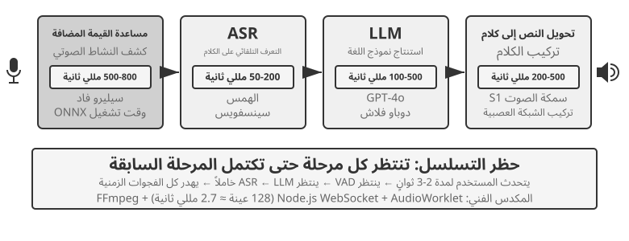
اعتمدت المساعدات الصوتية الأولى هذا المسار المتسلسل من أربع مراحل لسبب بسيط: لم يكن هناك نموذج واحد يجمع التعرّف على الكلام وفهم اللغة والتفكير وتركيب الصوت. وأتاحت البنية المكوّنية تطوير كل جزء وتحسينه مستقلًا، لكنها دفعت ثمنًا واضحًا هو تراكم زمن الاستجابة؛ إذ لا تبدأ مرحلة حتى تنتهي سابقتها.
تأتي آلية كشف النشاط الصوتي (VAD) في أول المسار، وتراقب الصوت باستمرار لتحدد متى انتهى المتحدث. وتستخدم الأنظمة عادةً عتبة صمت متصل بين 500 و800 مللي ثانية؛ فإذا تجاوز الصمت نصف ثانية تقريبًا عُدّت الجملة منتهية. وهنا يظهر أول مصدر للكمون ومفاضلة دقيقة: إن قصرت العتبة، فقد يفسَّر توقف المتحدث للتفكير على أنه نهاية كلام فتُقطع الجملة؛ وإن طالت، اضطر المستخدم إلى الانتظار قرابة ثانية بعد فراغه من الكلام قبل أن يبدأ الرد.
يحوّل التعرّف الآلي على الكلام (ASR) الموجة الصوتية إلى نص. وتستغرق نماذج مثل Whisper وSenseVoice عادةً ما بين 50 و200 مللي ثانية لنسخ مقطع مدته خمس ثوانٍ عند تشغيل نموذج صغير أو متوسط على وحدة GPU، وقد يرتفع الزمن إلى 200–500 مللي ثانية مع النماذج الأكبر أو الموارد المحدودة، كما في مجموعة الضبط بالتجربة 9-3. والأهم أن النموذج اللغوي يظل خاملًا طوال انتظار VAD وASR؛ فهو لم يتلق نصًا بعد، ولا يستطيع بدء التفكير مبكرًا.
أما النموذج اللغوي الكبير (LLM)، فحتى مع تحسينه جيدًا يتراوح زمن أول رمز (TTFT) عادةً بين 100 و500 مللي ثانية بحسب طول السياق، ويحتاج فك ترميز أول مقطع قصير صالح للنطق إلى وقت إضافي. وإذا كان وضع reasoning (التفكير) مفعّلًا، فعادةً ما يُكمل النموذج تفكيره الداخلي قبل إخراج أول رمز مرئي، وقد يمتد الانتظار من خمس إلى عشر ثوانٍ. وفي التنفيذ التقليدي المتسلسل بالكامل، يُنتظر أيضًا اكتمال رد LLM قبل تمرير النص إلى TTS.
وأخيرًا يحوّل TTS نص الرد إلى صوت، ويستغرق تركيب مقطع قصير عادةً 200–500 مللي ثانية. يستخدم الشكل 9-2 ردًا قصيرًا من دون reasoning لتوضيح تراكم زمن الاستجابة في التنفيذ المتسلسل: VAD (500–800 مللي ثانية) + ASR (50–200) + زمن أول رمز في LLM (100–500) + توليد مقطع قصير في LLM (100–300) + TTS (200–500)، أي ما مجموعه نحو 0.95–2.3 ثانية. وهذا نطاق توضيحي وفق مقياس موحّد فحسب؛ أما القيمة الفعلية فتعتمد أيضًا على طول الإدخال والرد، والنموذج، والعتاد، والشبكة، والحمل.
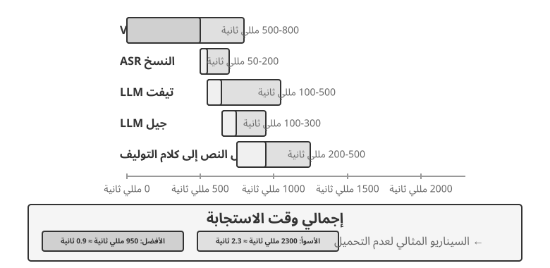
وبمجرد بدء الإنتاج، فإن زمن الوصول في قائمة الانتظار يجعل الأمور أسوأ. إنه يعمل مثل المطعم: كلما كان المطبخ أكثر ازدحاما، كلما طال الانتظار - ولا ينمو الانتظار بشكل خطي، بل يرتفع بسرعة كبيرة (الشكل 9-3). عندما يصل طلب دون وجود قائمة انتظار أمامه، يكون وقت المعالجة هو زمن الوصول بدون قائمة انتظار أو زمن الوصول الخامل. ولكن عند وصول طلبات متعددة في وقت واحد، يجب على المتأخرين الوقوف في قائمة الانتظار.
وبشكل بديهي، كلما ارتفع معدل الاستخدام، زاد وقت الانتظار بشكل حاد وغير خطي. تعطي نظرية الطابور العلاقة التقريبية (للحدس هنا؛ ليست هناك حاجة إلى اشتقاق صارم): إجمالي الكمون ≈ الكمون الخامل × 1/(1-الاستخدام). يشير الاستخدام إلى نسبة الوقت الذي يكون فيه الخادم مشغولاً؛ على سبيل المثال، يعني الاستخدام بنسبة 50% أن الخادم يعالج الطلبات نصف الوقت ويكون خاملاً نصف الوقت. عند استخدام 50%، يتضاعف زمن الوصول؛ عند 80%، يكون ذلك خمسة أضعاف زمن الوصول الخامل - ولهذا السبب لا يمكن للخوادم أن تعمل تحت التحميل العالي لفترة طويلة.
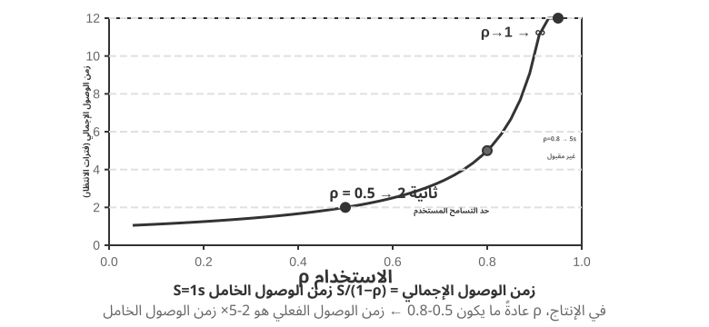
التجربة 9-1 ★: بناء وكيل صوتي تقليدي
تقوم هذه التجربة ببناء نظام حوار صوتي كامل في الوقت الفعلي، مما يسمح للمستخدمين بالتفاعل مع الذكاء الاصطناعي عبر الصوت من خلال الميكروفون. يستخدم النظام بنية فصل أمامية/خلفية مع اتصال في الوقت الفعلي عبر WebSocket.
تتبع العملية الأساسية نمطًا تسلسليًا صارمًا: تلتقط الواجهة الأمامية إدخال الميكروفون وترسله إلى الواجهة الخلفية في الوقت الفعلي عبر WebSocket. تعمل الواجهة الخلفية على تشغيل نموذج Silero VAD لاكتشاف النشاط الصوتي، والذي يوفر دقة أعلى ومقاومة أفضل للضوضاء مقارنة بطرق الكشف التقليدية القائمة على الحجم. بعد اكتشاف ما يقرب من 500 مللي ثانية من الصمت المستمر، يتم استخراج مقطع الصوت للمعالجة اللاحقة.
تدعم كل من مراحل ASR وLLM وTTS التبديل المرن بين مقدمي الخدمة المتعددين، مما يسمح للمطورين باختيار المجموعة المثالية بناءً على زمن الوصول والدقة وظروف الشبكة الإقليمية.
التجربة 9-2 ★: إنشاء وكيل هاتف باستخدام صوت PineClaw API
قامت التجربة 9-1 ببناء نظام حوار صوتي داخل المتصفح، ولكن العديد من مهام الوكيل في العالم الحقيقي تتطلب إجراء مكالمات هاتفية فعلية - الاتصال بخدمة العملاء للتفاوض بشأن الفواتير وحجز المطاعم وتأكيد الطلبات. أظهر الفصل الرابع، من خلال آلية قناة PineClaw، كيف يمكن للبنية المستندة إلى الحدث تقليل زمن الاستجابة لإشعارات الهاتف من دقائق إلى ثوانٍ. تركز هذه التجربة على بناء المكالمة الصوتية نفسها. بأخذ PineClaw Voice API (الذي طوره فريق المؤلف) كمثال، عادةً ما تقوم واجهات برمجة التطبيقات الصوتية للاتصالات الهاتفية على مستوى الإنتاج بتغليف عملية الاتصال بأكملها، والتنقل عبر الرد الصوتي التفاعلي (على سبيل المثال، "للاستفسارات، اضغط على 1؛ وبالنسبة للمشغل، اضغط على 0" في قوائم الهاتف)، والمحادثة، والنسخ: يوفر الوكيل رقم الهاتف والهدف والسياق. المعلومات، ويكمل الوكيل الصوتي المكالمة بأكملها، ويعيد سجل المكالمات المنظم.
هدف التجربة: بناء وكيل قادر على إكمال المهام عبر مكالمات هاتفية حقيقية، ودمج PineClaw Voice كأداة في حلقة ReAct.
المنهج الفني: استخدم PineClaw Voice Python SDK (
pine-voice) لتزويد الوكيل بأداةmake_phone_call. يتلقى الوكيل وصف مهمة المستخدم (على سبيل المثال، "ساعدني في حجز فحص أسنان غدًا الساعة 3 مساءً")، وباستخدام منطق ReAct، يحدد: (1) رقم الهاتف الذي يجب الاتصال به؛ (2) الهدف والمعلومات الأساسية للمكالمة؛ و(3) كيفية إبلاغ المستخدم بالنتائج بعد انتهاء المكالمة.سير عمل الوكيل: يقول المستخدم "اتصل بالعيادة لحجز موعد للغد" ← يفكر الوكيل في المعلومات المطلوبة (رقم هاتف العيادة، وقت الموعد، اسم المريض) ← إذا كانت المعلومات غير كافية، يطلب التوضيح من المستخدم ← يتصل بأداة
make_phone_call← يتصل PineClaw بالرقم، ويتحدث مع الطرف الآخر، ويكمل الحجز ← يتلقى الوكيل ملخص المكالمة ونصها ← يبلغ المستخدم بالنتيجة.معايير القبول: إجراء مكالمة اختبارية بنجاح (يمكنك الاتصال أولاً بهاتفك الخاص للتحقق من الاتصال). يمكن للوكيل تحديد معلمات الاتصال بشكل مستقل بناءً على وصف المهمة. بعد انتهاء المكالمة، يقوم باستخراج المعلومات الأساسية بشكل صحيح (وقت الموعد، رقم التأكيد، وما إلى ذلك) وإبلاغ المستخدم بها. قارن الفرق بين استخدام API مباشرة والاتصال به من خلال حلقة ReAct الخاصة بالوكيل - يمكن للأخيرة التعامل مع المواقف ذات المعلومات غير الكاملة (على سبيل المثال، البحث عن رقم الهاتف إذا لم يقدمه المستخدم).
توضح هذه التجربة اتجاه تطبيقي مهم لوكلاء الصوت: لا يمكن للوكلاء إجراء محادثات صوتية مع المستخدمين فحسب، بل يمكنهم أيضًا التفاعل مع العالم الخارجي عبر المكالمات الهاتفية نيابة عن المستخدم. تم تدريب وكيل الصوت في PineClaw خصيصًا للتعامل مع الانتظار لمدة ساعة، والتنقل في قائمة الهاتف، والمفاوضات المعقدة - تخيل أن يقوم الذكاء الاصطناعي بالاتصال بخط خدمة العملاء الخاص بشركة الاتصالات الخاصة بك بالنيابة عنك وانتظر عاملًا بشريًا. هذه هي بالضبط السيناريوهات التي تكافح فيها خطوط الأنابيب الصوتية التسلسلية التقليدية.
تدفق كامل السلسلة لخط الأنابيب المتتالي¶
يفترض الشكل 9-2 سيناريو متسلسلًا بالكامل تنتهي فيه كل مرحلة قبل تمرير المهمة إلى التالية. وتحافظ أنظمة الإنتاج عادةً على التقسيم المعياري VAD-ASR-LLM-TTS، لكنها تجعل كل مرحلة تُخرج نتائج تزايدية في أبكر وقت ممكن لتقصير المدة حتى يسمع المستخدم أول مقطع صوتي:
- ينسخ ASR أثناء الاستماع: ينتج التعرف المتدفق نسخًا مؤقتة باستمرار بينما يتحدث المستخدم، فيخفي معظم حسابات التعرف داخل زمن كلامه. ومع ذلك يجب تثبيت النص النهائي بعد انتهاء الدور، لأن السياق اللاحق قد يغيّر النسخ المؤقت.
- يُخرج LLM النص بصورة متدفقة ويقسّمه: يقسّم النموذج الرد أثناء توليده إلى مقاطع صالحة للنطق وفق علامات الترقيم أو المعنى، ويرسل أول مقطع إلى TTS من دون انتظار اكتمال الرد. لا يقلل ذلك TTFT في LLM ولا يتجاوز reasoning؛ وإنما يلغي انتظار اكتمال بقية الرد.
- يركّب TTS الصوت تدريجيًا: يبدأ TTS عند استلام أول مقطع نصي، ويعيد كتلًا صوتية قبل اكتمال الموجة كلها. بعد ذلك يمكن أن يتداخل توليد بقية النص في LLM مع تركيب الكلام اللاحق في TTS وتشغيل العميل للصوت الذي استلمه بالفعل.
لكن جعل كل مرحلة متدفقة لا يعني أن النماذج الثلاثة تبدأ العمل في الوقت نفسه على الدور ذاته. ففي سلسلة معيارية لا تعتمد التخمين تظل التبعيات قائمة: يستطيع ASR العمل أثناء كلام المستخدم؛ ولا يولّد LLM الرد النهائي إلا بعد انتهاء الدور واستقرار النسخ؛ ولا يبدأ TTS إلا بعد أن يخرج LLM أول مقطع نصي صالح للنطق. التداخل الحقيقي يقع بين كلام المستخدم ونسخ ASR، وبين توليد بقية رد LLM وتركيب TTS وتشغيله، وليس بين جميع حسابات ASR وLLM وTTS من البداية إلى النهاية.
تستخدم الأنظمة الأكثر جرأة التوليد الاستباقي/التخميني (preemptive/speculative generation): تشغّل LLM مبكرًا اعتمادًا على جزء مستقر بما يكفي من النسخ، ثم تلغي التوليد أو تعيده أو تصححه إذا تغيّر النسخ لاحقًا. ويمكن أيضًا تركيب الصوت مبكرًا، لكن التشغيل ينتظر عادةً تثبيت الدور حتى لا يتحدث Agent فوق مستخدم لم يفرغ بعد. تستطيع أطر مثل LiveKit Agents وPipecat دعم السلسلة المتدفقة العادية وهذه الاستراتيجيات الاستباقية. أما تداخل ASR وLLM فعليًا فيتوقف على تنفيذ صريح لتثبيت النسخ الجزئي وإبطاله والتراجع عنه، ولا يحدث تلقائيًا بمجرد تفعيل خيار stream.
ولا يلغي التدفق العادي انتظار الصمت في VAD والحكم على نهاية الدور نفسه. يكون ASR المتدفق قد بدأ العمل بالفعل أثناء هذا الانتظار؛ وما يمنعه قرار الدور هو تثبيت النسخ النهائي وتشغيل الرد. قد يخفي التوليد الاستباقي جزءًا من هذه الحسابات، لكن لا يزال على النظام تحديد الوقت الآمن للكلام. ويتطلب تقليل هذا التأخير أكثر تحسين الإدراك الأمامي نفسه وقرار نقطة النهاية نفسه.
دفق الإدراك الصوتي: استبدال VAD + ASR¶
تتكون الواجهة الأمامية للإدراك من مرحلتين: يحدد VAD ما إذا كان المستخدم قد انتهى من التحدث، ويحوّل ASR الصوت إلى نص. في البنية المتسلسلة بالكامل تحدد المرحلتان معًا متى يبدأ خط الأنابيب اللاحق وما المدخل الذي يتلقاه. أما في البنية المتدفقة فيبدأ ASR مبكرًا، لكن تثبيت النص النهائي وتوقيت بدء الرد يظلان مقيدين بقرار نقطة النهاية. تواجه سلسلة VAD + ASR التقليدية ثلاث مشكلات أساسية:
- تراكم زمن الاستجابة: يجب أن ينتظر VAD فترة صمت تتراوح من 500 إلى 800 مللي ثانية لتأكيد انتهاء المستخدم، لأنه لا يمكنه التنبؤ بالمستقبل ويمكنه الاعتماد فقط على "الانتظار" للتمييز بين "انتهى بالفعل" و"مجرد التوقف للتفكير".
- فقدان المعلومات: يقوم جهاز VAD بإخراج إشارة ثنائية فقط مثل "الصوت/الصمت". تُفقد جميع التفاصيل الصوتية - التغيرات في المشاعر، والتغيرات في النغمة، والتوقفات المترددة، وأجواء الخلفية. الأخطاء شائعة بشكل خاص في البيئات المعقدة: قد يتم الخلط بين التوقف لفترة أطول قليلاً ونهاية الكلام، مما يؤدي إلى اقتطاع الجملة؛ قد تؤدي الضوضاء الخلفية إلى بداية خاطئة، مما يتسبب في قيام النظام بمعالجة الصوت عندما لا يتحدث أحد؛ وقد لا يتمكن النظام من معرفة ما إذا كانت عبارة "uh-huh" الخاصة بالمستخدم هي مقاطعة أم إقرار.
- انخفاض الدقة: يقوم نظام VAD بتقطيع الصوت المستمر إلى مقاطع مستقلة، ويتم إرسال كل منها إلى ASR للتعرف عليها، مما يؤدي إلى تعطيل استمرارية السياق. تزداد أخطاء التعرف بشكل كبير بالنسبة للمحتوى الذي يتطلب سياقًا، مثل عناوين البريد الإلكتروني وأسماء العلامات التجارية والأسماء الشخصية وأسماء العلم الأخرى. على سبيل المثال، إذا قال المستخدم "john dot smith at gmail dot com" وتم تقسيم "john" و"smith" إلى مقاطع مختلفة، فقد يتم التعرف بشكل خاطئ على كلمة "smith" على أنها "miss" نظرًا لعدم وجود سياق.
نماذج الإدراك الصوتي المتدفق تقدم حلاً أساسيًا. أولاً، حدد ما يعنيه "البث" من الناحية الفنية: ما إذا كان النموذج الصوتي يمكنه البث يتوقف على ما إذا كان جهاز التشفير الخاص به سببيًا أم مقسمًا (يعتمد فقط على الصوت الذي وصل بالفعل، ولا يحتاج أبدًا إلى التسجيل بالكامل) وما إذا كان فك تشفيره تزايديًا (ينبعث نتائج جزئية مع ظهور كل مقطع صوتي صغير). لا يمكن لـ Whisper البث - ليس بسبب فك التشفير الخاص به، والذي يعد انحدارًا ذاتيًا على أي حال، ولكن لأن برنامج التشفير الخاص به يحتاج إلى مقطع صوتي كامل (ثابت لمدة 30 ثانية، ومبطن إذا كان أقصر) قبل أن يتمكن من البدء. لاحظ أيضًا أن التعرف على البث في حد ذاته ليس جديدًا: البث التقليدي ASR، الذي يمثله RNN-T وstreaming Conformer، تم نشره منذ فترة طويلة على نطاق واسع في الصناعة - تستخدم التسميات التوضيحية المباشرة على الهواتف والكتابة الصوتية في تطبيقات لوحة المفاتيح مثل هذه النماذج بالضبط - ولا علاقة لها بـ نماذج LLM.
يركز هذا القسم على مسار جديد: الإدراك السمعي المتدفق القائم على LLM — ما بعد التدريب على العمود الفقري LLM مفتوح المصدر لإنتاج استجابات دلالية مباشرة من دفق صوتي مستمر، وبالتالي دمج "التعرف" و"الفهم" في نموذج واحد. إنها ترقية إلى البث ASR التقليدي، وليس اختراعًا لتقنية البث: يظل زمن الوصول للتعرف المتزايد على ترتيب وقت الاستدلال أحادي الخطوة (عشرات إلى بضع مئات من المللي ثانية)، ولكن النموذج لم يعد يرى أجزاء معزولة مقطوعة بواسطة VAD. وبدلاً من ذلك، فإنه يرى دفقًا صوتيًا مستمرًا من بداية المحادثة إلى اللحظة الحالية، مما يتيح التعلم في السياق استنادًا إلى السياق الكامل ويحسن بشكل كبير دقة التعرف على المعلومات الشخصية والمصطلحات الفنية وأنماط النطق الفردية.
الميزة الرئيسية الأخرى هي أن هذا المسار يرث المعرفة العالمية وقدرات التفكير المنطقي لـ نماذج LLM - بعد كل شيء، شهد النموذج الأساسي كميات هائلة من النص. على سبيل المثال، يعرف النموذج أن كلمة "Apple" متبوعة بكلمة "حدث" تشير على الأرجح إلى الشركة وليس إلى الفاكهة. يؤدي تحسين المعرفة هذا إلى جعل دقة التعرف على المعلومات ذات القيمة العالية مثل الكميات وأسماء الأماكن وأسماء العلامات التجارية تتجاوز بكثير دقة التعرف على السيارات (ASR) التقليدية. يحتوي هذا المسار بالفعل على نماذج قابلة للنشر، مثل Fixie's Ultravox، الذي يغذي الصوت مباشرة في العمود الفقري LLM ويخرج النص والرموز الدلالية. ينتمي Qwen2-Audio المستخدم في تجارب هذا القسم وQwen2.5-Omni من Alibaba أيضًا إلى هذه الفئة من النماذج الصوتية الأصلية.
ومع ذلك، فإن استبدال جهاز VAD لا يتطلب بالضرورة استخدام جهاز صوت واسع النطاق LLM. إذا كان الهدف هو حل المشكلة الأولى فقط —تحديد ما إذا كان المستخدم قد انتهى من التحدث—فهناك طريق أسهل: تضمين هذا "الحكم المنعطف" مباشرة في أداة التعرف نفسها2. النهج: أضف محول LoRA إلى نموذج صغير للتعرف على البث مفتوح المصدر بحيث يقوم بالنسخ أثناء وزن الدلالات والصمت معًا للحكم على ما إذا كانت الجملة قد عبرت عن فكرة كاملة أم لا - وهو أمر ضروري لأن التوقفات المؤقتة أثناء المنعطفات (إيقاع أثناء قراءة رقم الهاتف) غالبًا ما تكون أطول من الفجوات بين المنعطفات، لذلك لا بد أن تفشل عتبة الصمت وحدها في كلا الاتجاهين. النتيجة الأكثر إثارة للاهتمام: عندما يستمر النموذج في التردد بشأن ما إذا كان سيأخذ الدور، فإن السبب الجذري عادة لا يكون البنية ولكن تسميات التدريب المشروحة بعد فوات الأوان - استخدم المفسرون الصوت الذي ظهر بعد نقطة القرار، والذي لا يمكن للنموذج عبر الإنترنت رؤيته أبدًا. أعد التعليق التوضيحي لكل تسمية باستخدام المعلومات المتاحة في لحظة القرار فقط، وسيختفي التردد الزائف. وهذا يعكس حكمًا من الفصل السابع حول مرحلة ما بعد التدريب: غالبًا ما تكون البيانات أكثر أهمية من الهندسة المعمارية. يحتوي هذا المسار الأخف أيضًا على تطبيقات على مستوى الإنتاج: يعمل كل من Deepgram's Flux والبث العالمي من AssemblyAI على تضمين نقطة النهاية وتحويل الكشف مباشرة إلى نماذج التعرف على التدفق، المصممة خصيصًا لوكلاء الصوت؛ على الجانب مفتوح المصدر، يوفر LiveKit وPipcat نماذج كشف الانعطاف الدلالية.
لا يُخرج النموذج النص فحسب، بل يُخرج أيضًا سلسلة من العلامات الخاصة للأحداث الصوتية — وهي رموز مخصصة تم تقديمها أثناء التدريب على النموذج. يتعلم النموذج إخراجها تلقائيًا عند اكتشاف الأحداث الصوتية المقابلة. تشمل الأنواع الشائعة ما يلي:
<speak_start/end>: يحدد بداية الكلام ونهايته بناءً على حكم شامل للدلالات والصوتيات، بدلاً من اكتشاف الصمت البسيط.<interrupt>: يميز ما إذا كان المستخدم يريد المقاطعة حقًا أم أنه يقر فقط بضجيج الخلفية أو يتأثر به.<emotion:happy/frustrated>: علامات العاطفة.<laugh>/<sigh>: الإشارات اللغوية مثل الضحك والتنهدات.<music>/<noise>: الأصوات البيئية.
تشكل هذه العلامات، جنبًا إلى جنب مع الرموز النصية، تدفق حدث موحد يتم تغذيته في طبقة التفكير.
Input audio: "Um, actually I think... no wait, let me reconsider."
Model output stream:
<speak_start> Um, <emotion:hesitant> actually I think...
<silence:500ms> no wait, <emotion:confident> let me reconsider <speak_end>
لاحظ أن النموذج لا يُخرج فقط نسخًا نصيًا ولكن أيضًا علامات الأحداث الصوتية (بداية/نهاية الكلام، وتغييرات المشاعر، وفترات الصمت). يمكن لأطر عمل الوكلاء الاستفادة من هذه العلامات لمزيد من التفاعلات الطبيعية - على سبيل المثال، تقديم خيارات بشكل استباقي عند اكتشاف تردد المستخدم.
التجربة 9-3 ★: محاكاة الإدراك الصوتي المتدفق باستخدام Qwen2-Audio
أولاً، تحذير حول التصميم التجريبي: Qwen2-Audio بحد ذاته هو نموذج غير متدفق يأخذ مقاطع كاملة كمدخلات. تستخدم هذه التجربة مدخلات مقسمة لمحاكاة معالجة البث — حيث تقوم بتقطيع التدفق الصوتي المستمر إلى أجزاء صغيرة ذات طول ثابت وإرسال كل منها إلى النموذج مع سياق الصوت المتراكم. يقوم النموذج تدريجيًا بإنشاء رموز الأحداث النصية والصوتية (مثل الضحك والتوقف المؤقت والإشارات غير اللفظية الأخرى)، بينما تقيس التجربة زمن الوصول من إرسال كل جزء إلى تلقي النص. هذا النهج له تكلفة كبيرة: برنامج تشفير Qwen2-Audio ليس تزايديًا. في كل مرة يقوم النموذج بمعالجة مقطع جديد، يجب عليه إعادة تشفير كل الصوت المتراكم مسبقًا من البداية. مع نمو المحادثة، يزداد أيضًا زمن انتقال التشفير لكل قطعة. هذا هو الفرق الأساسي بين "البث المحاكي" و"البث الحقيقي"، الذي يستخدم أجهزة تشفير تزايدية أو سببية لمعالجة الصوت الذي وصل حديثًا فقط. يوضح التصميم فوائد الدقة للإدراك المستمر مع السياق الكامل، لكن أرقام زمن الوصول الخاصة به تعكس فقط حجم القطعة وسرعة الاستدلال، وليس زمن استجابة الحزمة الأولى لنموذج مصمم للبث الحقيقي، مثل Qwen3-Omni مع التشفير المقسم. يمكن للقراء المهتمين تكرار التجربة بمثل هذا النموذج. خط الأساس هو خط أنابيب VAD + Whisper ASR التقليدي. تغطي التجربة ثلاثة سيناريوهات: محادثة عادية، جمل طويلة مع توقفات، ومحادثة مع ضجيج في الخلفية.
النتائج: يمكن التحكم في زمن وصول التعرف المتزايد لنظام المحاكاة المقسمة في حدود 1 إلى 200 مللي ثانية (اعتمادًا على طول القطعة والأجهزة)، في حين يتطلب المخطط التقليدي انتظار VAD لتأكيد الاكتمال (600 مللي ثانية) بالإضافة إلى استدلال Whisper (حوالي 200-500 مللي ثانية تحت تكوين هذه التجربة)، بإجمالي 800-1100 مللي ثانية. في السيناريو الذي يتضمن فترات توقف مؤقت، أخطأ مساعد المساعدة القانونية (VAD) في تقدير الإيقاف المؤقت الطويل الأول باعتباره نهاية الكلام، حيث قام بتقسيم الجملة إلى جزأين للتعرف عليها بشكل منفصل. تم التعرف بشكل خاطئ على "大概两点左右" ("حوالي الساعة الثانية") على أنها "大概零点左右" ("حوالي منتصف الليل") - حيث تم تجريدها من السياق المحيط، وتم فهم الصوت المماثل 两 (liưng، "two") بشكل خاطئ على أنه 零 (líng، "صفر"). النظام المقسم، مع الحفاظ على السياق الكامل، يتعرف بشكل صحيح على الجملة بأكملها. في سيناريو ضوضاء الخلفية، يقوم Qwen2-Audio بإخراج الرموز المميزة
<|noise|>للإشارة إلى وجود ضوضاء دون مقاطعة التعرف، بينما تم تشغيل VAD التقليدي بشكل خاطئ عن طريق الضوضاء، مما تسبب في بدء عملية التعرف قبل الأوان.
النموذج 2: النماذج شاملة الوسائط (Omni)¶
انظر إلى الوراء إلى خط الأنابيب المتتالي ككل: حتى مع ترقية الواجهة الأمامية للإدراك إلى إدراك الصوت المتدفق، فإنه لا يزال يوزع الاستماع والتفكير والتحدث إلى ثلاثة نماذج مستقلة مرتبطة بواجهة منفصلة. ومهما كانت هذه الواجهة واسعة النطاق، فإنها لا تحمل سوى عدد قليل من الرموز الدلالية والعلامة الصوتية العرضية؛ غالبًا ما يتم فقدان عاطفة المتحدث ونغمته ونغمة صوته وأصوات الخلفية المحيطة أو الموسيقى أثناء عملية التسليم. ولأن الأجزاء الثلاثة تم تدريبها وضبطها بشكل منفصل، فإنها تكافح للعمل كقطعة واحدة. تأخذ النماذج متعددة الوسائط (Omni) مسارًا مختلفًا - نموذج واحد "يستمع" مباشرة إلى الصوت، و"يفكر" في الرد، و"يتحدث به"، ويدمج الأجزاء الثلاثة في جزء واحد (الشكل 9-4). مع وجود بيانات تدريب كافية، يمكن للمساحة الكامنة الداخلية للنموذج أن تحمل هذه الإشارات شبه اللغوية مباشرة إلى جانب الجيل، مما يقلل من زمن الوصول مع الحفاظ على العروض والعاطفة بطرق لا يستطيع النص وحده القيام بها. المفاضلة: تحتوي خطوط الأنابيب المتتالية على وحدات نظيفة، وضبط لكل مقطع، وقابلية تفسير جيدة؛ النماذج الشاملة تشتري زمن استجابة أقل ودقة غير نصية على حساب متطلبات بيانات التدريب الأكثر ثقلًا وضعف إمكانية التفسير.
يتم تجاهل أحد الأبعاد بشكل روتيني: الميزة الرئيسية للنماذج الشاملة هي زمن الوصول؛ إنهم لا يفوزون بالضرورة بـ الدقة. المقارنة المفيدة هي تتالي ذاتي — حيث يقوم نفس النموذج أولاً بنسخ الصوت إلى نص منظم، ثم يقوم بالتفكير في هذا النص. ما إذا كان التتالي الذاتي أو التمريرة الواحدة من طرف إلى طرف أكثر دقة يعتمد على المهمة، والنمط واضح: عندما يتم تحديد الإجابة بشكل أساسي من خلال المحتوى الدلالي ("ما قيل") ويمكن للنص الوسيط أن يحمل المعلومات ذات الصلة بالمهمة، أو يتطابق بشكل متتالي ذاتيًا أو يتفوق من النهاية إلى النهاية - خاصة بالنسبة للنماذج ذات الإدراك الأضعف. عندما تتوقف الإجابة على إشارات غير لفظية يصعب على النص تمثيلها (النغمة، العاطفة، الأصوات البيئية)، فإن النهاية إلى النهاية تتقدم بوضوح إلى الأمام. والأهم من ذلك، أنه يمكن التنبؤ بالجانب الذي سيفوز به مقدمًا من طبيعة المهمة، بدلاً من إرجاعه إلى القول بأن "النهاية إلى النهاية أكثر تقدمًا". يتبع مبدأ التصميم: ما يحدد الأداء عادة ليس ما إذا كان هناك تمثيل وسيط — عنق الزجاجة — ولكن ما هي المعلومات التي يحملها عنق الزجاجة. قم بترقية النص الوسيط من النسخ المجرد إلى تمثيل منظم باستخدام علامات غير لغوية (العاطفة، ومعدل الكلام، والأصوات البيئية)، وغالبًا ما تضيق ميزة الدقة للنماذج الشاملة. هذا هو نفس الادعاء الذي تم تقديمه سابقًا في "الإدراك الصوتي المتدفق": يجب ألا تقوم طبقة الإدراك بإخراج نص عادي وحده3.
مهما بلغت قوة Omni، فقد قامت فقط بدمج ثلاثة نماذج في نموذج واحد، دون التخلص من افتراض "تناوب الأدوار": فهي لا تزال تعتمد على VAD لتخصيص الأرضية - حيث تصمت في اللحظة التي تكتشف فيها أن المستخدم يتحدث، وتبدأ في اللحظة التي يصمت فيها المستخدم. لذا فإن الفشل المألوف يعود إلى الظهور: يقوم المستخدم بتلاوة سلسلة من الأرقام، ويتوقف مؤقتًا، ويقرر أومني أن الأمر قد انتهى ويتدخل. إن الإدراك الصوتي المتدفق الموصوف سابقًا يحول الحكم من مدة الصمت إلى المستوى الدلالي ويقلل بشكل كبير من مثل هذه الأخطاء - ولكن هذا لا يزال بمثابة رقعة محلية ضمن إطار تبادل الأدوار، وليس نهاية تبادل الأدوار بحد ذاته. للهروب إلى الأبد، يجب على المرء أن يتوقف عن الترقيع داخل الإطار: دع النموذج يستمع ويتحدث في وقت واحد ويقرر بنفسه متى يتحدث، دون الحاجة إلى التبديل الصعب بين "من يأتي دوره".
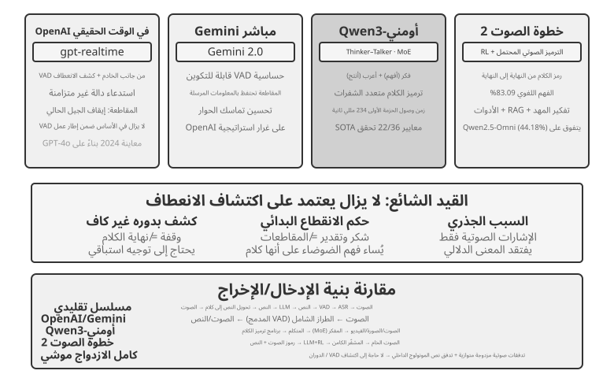
على مستوى النموذج، يكون OpenAI Realtime API قريبًا من النهاية إلى النهاية لأن النموذج يعالج الصوت محليًا. ومع ذلك، على مستوى التفاعل والتحكم، فإنه لا يزال يعتمد على VAD التقليدي، مما يجعله خطوة وسيطة نحو نظام شامل تمامًا. تم تشغيل معاينة 2024 في البداية على GPT-4o؛ عندما أصبح API متاحًا بشكل عام في عام 2025، تحول إلى gpt-realtime، وهو نموذج مخصص مُحسّن للصوت في الوقت الفعلي بدلاً من وضع GPT-4o. يعمل API على تمكين VAD من جانب الخادم بشكل افتراضي ويحدد تلقائيًا متى يبدأ المستخدم في التحدث ويتوقف عنه. كما أنه يدعم المقاطعات: عندما يبدأ المستخدم في التحدث، يقوم API على الفور بإيقاف توليد الصوت الحالي، تمامًا كما يصمت شخص واحد بشكل طبيعي عند مقاطعته في محادثة وجهًا لوجه. يقدم gpt-realtime أيضًا استدعاءات وظائف غير متزامنة، مما يسمح للنموذج بمواصلة التحدث أثناء انتظار نتائج الأداة وبالتالي إخفاء زمن وصول الأداة داخل المحادثة. تعمل هذه التحسينات على تحسين التجربة ولكنها تظل تحسينات ضمن إطار عمل قيمة القيمة المضافة. يتبع Gemini Live API نهجًا مشابهًا، حيث يوفر حساسية VAD قابلة للتكوين ويحافظ على المعلومات المرسلة بالفعل بعد انقطاع للحفاظ على تماسك المحادثة.
Qwen3-Omni يعتمد بنية Thinker-Talker: فصل التفكير (الفهم والاستدلال) عن التعبير (توليد الصوت) إلى وحدتين متخصصتين، وتوحيد الإدراك وتوليد النصوص والصور والصوت والفيديو.
للحفاظ على القدرة العالية مع التحكم في التكلفة الحسابية، تتبنى Qwen3-Omni بنية MoE (خليط من الخبراء) - فكر فيها على أنها "استدعاء فرق الخبراء عند الطلب": فهي تحتوي على شبكات خبراء صغيرة متعددة داخليًا، ولكل استنتاج، يتم تنشيط عدد قليل فقط من الشبكات الأكثر صلة بالمهمة الحالية، بينما لا يشارك الباقي في الحساب. على سبيل المثال، عند معالجة الكلام، فإنه يقوم في المقام الأول بتنشيط الخبراء المرتبطين بالكلام؛ عند معالجة الصور، فإنه ينشط في المقام الأول الخبراء المرتبطين بالرؤية. يتيح ذلك للنموذج أن يكون لديه عدد كبير جدًا من المعلمات (مما يضمن قدرة عالية) مع الحفاظ على الحساب الفعلي لكل رمز صغير جدًا، وبالتالي تحسين إنتاجية الاستدلال وتقليل زمن الوصول في قائمة الانتظار تحت الحمل العالي.
ومن المهم التمييز بين أمرين: تحسّن بنية خليط الخبراء (MoE) الإنتاجية، أي عدد الطلبات التي تستطيع وحدة الحوسبة خدمتها، لكنها لا تحدد مباشرةً موعد خروج أول حزمة صوتية؛ فهذا يعتمد على بنية التوليد. ويأتي انخفاض كمون الحزمة الأولى في Qwen3-Omni من وحدة Talker، التي تولّد الرموز الصوتية تدريجيًا بانحدار ذاتي متعدد دفاتر الشفرة، بينما يفك مرمّز سببي تلك الرموز تباعًا إلى موجة صوتية. وما إن تنتج وحدة Thinker نصًا حتى تستطيع Talker بث الكلام من دون انتظار اكتمال الرد كله. ويذكر التقرير الرسمي أن الكمون النظري لأول حزمة عند البدء البارد يقارب 234 مللي ثانية. ويدعم النموذج الفهم في 19 لغة والتوليد في 10 لغات، ويتصدر 22 من أصل 36 معيارًا صوتيًا وبصريًا.
يسلك Step-Audio 2 مسارًا مختلفًا؛ إذ يستقبل الصوت الخام مباشرةً ويولد النص والصوت معًا، محققًا محادثة صوتية حقيقية من طرف إلى طرف. ولا يفهم ما يقال، أي المعنى اللغوي، فحسب، بل يدرك أيضًا كيف يقال: مشاعر المتحدث، وسرعة كلامه أو تردده، وارتفاع النبرة وانخفاضها، إلى جانب الأصوات والموسيقى في الخلفية. ويولّد ردودًا معبّرة بالاستفادة من التفكير والتعلم المعزز، ويدمج RAG وأدوات خارجية مثل بحث الويب والبحث الصوتي. ووفق ورقة Step-Audio 2، حقق النموذج دقة 83.09% في معيار StepEval-Audio-Paralinguistic المقترح لفهم الإشارات غير اللغوية، متقدمًا بوضوح على Qwen2.5-Omni (44.18%) وGPT-4o Audio (43.45%) وKimi Audio (49.64%).
يعد Step-Audio R1 نموذجًا متابعة في سلسلة Step-Audio. بناءً على بنية المحادثة الصوتية الشاملة الخاصة بـ Step-Audio 2، فهو يدمج أيضًا قدرات التفكير مباشرةً في النموذج الصوتي. ويمثل الاثنان تطورًا تدريجيًا على نفس المسار التقني.
النموذج 3: نماذج الازدواج الكامل/التفاعلية¶
قام النموذج 2 بدمج ثلاثة نماذج في نموذج واحد ولكنه لا يزال متمسكًا بافتراض تبادل الأدوار - إما أن يتحدث المستخدم أو يتحدث النموذج، مع تخمين نقطة التبديل بواسطة VAD أو الدلالات. بعض السيناريوهات ببساطة لا تحتوي على مكان لجملة "جملتك، ثم جملتي". الترجمة الفورية هي الحالة الكلاسيكية: لا ينتظر المترجم الفوري جملة كاملة قبل البدء، ولكنه يستمع ويؤلف في الوقت نفسه، ويترجم كل وحدة من وحدات المعنى بمجرد اكتمالها تقريبًا، حيث يتداخل الاستماع والترجمة دائمًا. الألعاب الإيقاعية، حيث تقرع الطبول في الوقت المناسب مع الموسيقى، لا تزال أكثر تطرفًا: يجب أن تتتبع الأذن دفقًا موسيقيًا متواصلًا، ويجب أن تضرب الأيدي كل نبضة في اللحظة، ويجب على العقل أن يتوقع النغمة التالية - هنا لا يوجد شيء اسمه "دوران"، بل فقط دفق لا ينتهي من المدخلات. تتحدى مثل هذه المهام نموذج "منعطف بمنعطف" في جذوره: فهي تتطلب أن يحدث الاستماع والتفكير والعمل في وقت واحد، في حين أن الفرضية الكاملة للنموذج القائم على الدوران هي تقسيم الثلاثة إلى شرائح زمنية منفصلة. يأخذ نموذج الإرسال المزدوج الكامل مسار "إزالة VAD" إلى نقطة النهاية المنطقية الخاصة به - فهو ببساطة يتخلى عن افتراض أخذ الأدوار ويسمح للنموذج بالاستماع والتحدث بشكل مستمر، في نفس الوقت.
العمل البحثي الرائد هنا هو موشي لكيوتاي (2024). إنه يصمم دفقين صوتيين بالتوازي (صوت المستخدم وصوت النموذج)، مكملين بتدفق نصي "مونولوج داخلي" لتحسين الجودة اللغوية للكلام الناتج. نظرًا لأنه يستمع دائمًا، يصبح الكلام المتداخل والمقاطعات سلوكيات طبيعية، ولا تتطلب منطقًا واضحًا للكشف عن المقاطعة. يبلغ زمن الوصول من طرف إلى طرف حوالي 200 مللي ثانية، مما يقترب من الإيقاع الطبيعي للمحادثة البشرية.
في عام 2026، قام Thinking Machines Lab، الذي أسسته ميرا موراتي، بمعاينة فئة جديدة أطلقوا عليها نموذج التفاعل4 وجادلوا صراحة بأن التفاعل لا ينبغي أن يكون أداة خارجية مثل VAD ملتفة حول النموذج، ولكن يجب أن يكون مدمجًا في النموذج نفسه. وعلى حد تعبيرهم، "لكي يتم توسيع نطاق التفاعل مع الذكاء، يجب أن يصبح جزءًا من النموذج نفسه". من الناحية المعمارية، يُترجم هذا إلى المنعطفات الصغيرة: بدلاً من الانتظار حتى انتهاء دورة كاملة، يعمل النموذج في أجزاء تبلغ 200 مللي ثانية تقريبًا - حيث يقوم بمعالجة 200 مللي ثانية من المدخلات بشكل مستمر ويولد 200 مللي ثانية من المخرجات - مما يسمح لتدفقات الصوت والفيديو والنص بالتداخل والتقدم معًا. هذه التفاصيل هي تسوية متعمدة - جيدة بما يكفي للحفاظ على الصمت والتداخل والانقطاع كتدفقات مستمرة في سياق النموذج، مع عدم وجود حدود دوران مصطنعة لاستيعابها؛ ومع ذلك، فهي خشنة بدرجة كافية لمعالجة طرائق متعددة في أجزاء في وقت واحد، مع الحفاظ على زمن الوصول ضمن نطاق الوقت الفعلي المدرك. ولأن التفاعل يعيش داخل النموذج، فإن السلوكيات التي كان يجب تجميعها في السابق من أدوات متخصصة - الاستماع أثناء التحدث، والمشاهدة أثناء التدخل - أصبحت الآن مجرد جزء من وظيفة النموذج، وتتعزز كما يفعل النموذج. تم تدريب النموذج الأول، TML-Interaction-Small، بشكل مشترك على جميع التدفقات الثلاثة من الصفر؛ وعندما تلاحظ أن المستخدم يكتب جزءًا من التعليمات البرمجية التي تجرها الدواب، أو أن شخصًا ما يدخل إلى الإطار، فيمكنه التحدث دون سابق إنذار.
كما أن منهجها في "التفكير البطيء" تمثيلي أيضًا. نموذج التفاعل نفسه مسؤول فقط عن إبقاء المحادثة عبر الإنترنت. عندما يواجه مشكلة تتطلب تفكيرًا عميقًا أو استدعاءات للأدوات، فإنه يفوض إلى نموذج تفكير أقوى في الخلفية - ما يقدمه ليس استعلامًا معزولًا، بل سياق المحادثة بالكامل. في حين أن نموذج الخلفية يبرر ذلك، فإن النتائج تتدفق مرة أخرى بشكل تدريجي. يختار نموذج التفاعل بعد ذلك لحظة لا تقاطع المستخدم لينسج النتيجة بشكل طبيعي في المحادثة، مع الاستمرار في الرد والإجابة على المتابعات والتمسك بالكلمة. وبهذه الطريقة، فإنه يوفر "قدرات التخطيط والأداة والوكيل لنموذج المنطق" مع "كمون النموذج غير المفكر". وفقًا للتقرير الرسمي، يحقق TML-Interaction-Small (MoE بمعلمة 276B مع معلمات نشطة 12B) زمن وصول منخفض يصل إلى 0.40 ثانية تقريبًا (GPT-realtime-2.0 حوالي 1.18 ثانية)، ويتفوق بشكل ملحوظ على المنافسين الذين يسجلون ما يقرب من الصفر في معايير النشاط البصري؛ حتى كتابة هذا التقرير، لا يزال في مرحلة معاينة البحث.
في نفس العام، جلب OpenAI GPT-Live الإرسال المزدوج الكامل إلى نطاق الإنتاج، وتم طرحه عالميًا باعتباره النموذج الصوتي الافتراضي الجديد لـ ChatGPT. لم يعد يتعامل مع المحادثة كسلسلة من الرسائل المنفصلة، ولكن بدلاً من ذلك يعالج المدخلات بشكل مستمر بينما ينشئ المخرجات بشكل مستمر. ولذلك، يمكنه اتخاذ العديد من قرارات التفاعل في الثانية: ما إذا كان يجب بدء التحدث، أو مواصلة الاستماع، أو التوقف مؤقتًا، أو المقاطعة، أو استدعاء أداة ما. والنتيجة هي أنه ينتظر بهدوء عندما يفكر المستخدم بدلاً من مقاطعته، ويستخدم إقرارات مثل "mm-hmm" و"right" لإظهار أنه يستمع، كما أنه قادر على القيام بمهام مثل الترجمة في الوقت الفعلي التي تتطلب الاستماع والتحدث في وقت واحد.
يتبع GPT-Live أيضًا نفس المسار لفصل العمليات السريعة والبطيئة - فصل "التفاعل في الوقت الفعلي" عن "التفكير العميق": عندما يواجه مهمة تتطلب بحثًا أو تفكيرًا أو عمليات وكيل أكثر تعقيدًا، يقوم GPT-Live التفاعلي بتفويض المهمة إلى نموذج حدودي في الخلفية (عند الإطلاق، GPT-5.5)، مع الاستمرار في الحفاظ على تدفق المحادثة من تلقاء نفسه. بمجرد أن ينتج نموذج الخلفية نتيجة، يقوم GPT-Live بدمجها في المحادثة. يستخدم GPT-Live-1 والإصدار المصغر GPT-5.5 Instant في الخلفية، بينما يستدعي المستويان المتوسط والمرتفع GPT-5.5 الذي يدعم التفكير، مما يسمح للمستخدمين بالاختيار بين "سريع" و"عميق" حسب الحاجة. هذا "التقسيم السريع والبطيء للعمل" هو على وجه التحديد الموضوع الذي سيتم التوسع فيه في القسم التالي، "المقايضات في بنيات التفكير".
مراجعة الموضوع السردي لهذا الفصل الخاص بـ "استبدال جهاز VAD": يخمن جهاز VAD نقطة تبديل الدوران بناءً على حدود الصمت؛ يقوم إدراك التدفق (راجع القسم السابق "تدفق الإدراك الصوتي" في النموذج 1) بترقية حكم التبديل إلى المستوى الدلالي؛ ويحل نموذج الإرسال المزدوج الكامل مفهوم "التبديل" نفسه تمامًا - فهو يستمع دائمًا، لذلك لم يعد "الانقطاع" حدثًا يتطلب معالجة خاصة، ويتم التخلص من سلسلة معالجة البارجة إلى حد كبير من الناحية المعمارية. هذه هي نقطة النهاية لسلسلة السرد "استبدال VAD" اعتبارًا من وقت كتابة هذا التقرير.
المقايضات في بنيات التفكير: من الانفصال إلى التوحيد¶
التحدي الحقيقي هو التوتر بين الاستجابة في الوقت الفعلي والتفكير العميق: يتوقع المستخدمون استجابات على مستوى المللي ثانية، بينما تتطلب المشكلات المعقدة ثوانٍ من وقت التفكير. كيف يمكن للنموذج أن يفكر بعمق كافٍ مع الحفاظ على زمن استجابة منخفض؟ هذا التوتر ليس فريدًا بالنسبة للبنى الشاملة؛ تواجهها أيضًا خطوط الأنابيب المتتالية.
الحلول الثلاثة أدناه لا تمثل تقدمًا خطيًا. فهي عبارة عن مقايضات تصميمية لقيود مختلفة وتتعايش في الممارسة العملية. يعتمد الاختيار الصحيح على متطلبات زمن الوصول للتطبيق وعمق التفكير الذي يحتاجه. والفرق الرئيسي هو أن الحلين 1 و2 يقسمان العمل بين نموذجين مستقلين، أحدهما سريع والآخر بطيء، ويعملان بشكل متزامن. وهي لا تتطلب بنية شاملة ويمكن وضعها في طبقات فوق خط أنابيب متسلسل. الحل 3 فقط هو الذي يستوعب المنطق حقًا ضمن النموذج الشامل.
بحلول عام 2026، أصبح مسار "الفصل السريع والبطيء" هو الخيار السائد للمنتجات الصوتية الحدودية واكتسب اسمًا خاصًا به. يطلق عليه Thinking Machines Lab اسم "نماذج التفاعل" - وهو نموذج تفاعل في الوقت الفعلي مقترن بنموذج تفكير خلفي غير متزامن؛ يتبع كل من Grok Voice "Think Fast" الخاص بـ xAI، والوكيل الصوتي لـ Pine AI، و"وفد" GPT-Live للقسم السابق نفس المسار المتمثل في "سريع في المقدمة للحفاظ على المحادثة، وبطيء في الخلفية للاستدلال العميق." إن اختيار الفصل بدلاً من "تدريب نموذج واحد قوي للغاية" له سبب عملي: تتكرر نماذج الاستدلال الحدودي كل بضعة أشهر، في حين تتطلب قدرات التفاعل في الوقت الفعلي بيانات متخصصة وأهدافًا تدريبية. إن حشو كليهما في نفس النموذج يعني مطاردة هدف متحرك وربما إضعاف القدرة المنطقية الأكثر قيمة5. على العكس من ذلك، من خلال الحفاظ على أقوى نموذج تفكير سليمًا في الخلفية وتدريب نموذج تفاعل خفيف الوزن فقط في المقدمة، يمكن للمرء دائمًا استخدام أقوى "عقل" حالي - وهذا هو بالضبط سبب تأكيد GPT-Live على "التبديل المستدام لأحدث النماذج الحدودية". أدناه، ندرس الحلول الثلاثة من أجل آليات التنسيق القوية بشكل متزايد.
الحل الأول: تفكير سريع للاستجابة التمهيدية، وتفكير بطيء للإجابة¶
يعمل التفكير السريع والبطيء بالتوازي (الشكل 9-5): ينتج التفكير السريع إجابة قصيرة مع الاستمرار في غضون 500 مللي ثانية (الطريقة التي يقول بها الشخص لأول مرة "دعني أفكر")، بينما يقضي التفكير البطيء من 5 إلى 10 ثوانٍ في التفكير في الخلفية قبل تقديم الإجابة الكاملة. الأسلوب وراء التفكير البطيء هو "مقياس وقت الاختبار" - بعبارات واضحة، السماح للنموذج بالتفكير لفترة أطول قليلاً قبل الإجابة: فبدلاً من القفز إلى إجابة في خطوة واحدة، يعمل مثل شخص يحل مشكلة رياضية - ارسم منهجًا، واستنتج خطوة بخطوة، وتحقق من النتيجة - واستبدل المزيد من العمليات الحسابية بإجابة أفضل.
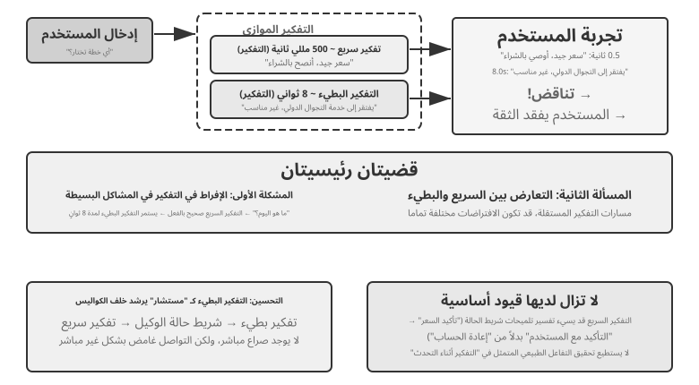
المشكلة 1: الإفراط في التفكير في الأسئلة البسيطة. يسأل المستخدم "ما هو اليوم؟" التفكير السريع يجيب بشكل صحيح على "الأربعاء" في غضون 500 مللي ثانية، لكن التفكير البطيء يستمر في التفكير لمدة 10 ثوانٍ كاملة ثم يكرر "الأربعاء". وهذا لا يهدر الموارد الحسابية فحسب، بل الأهم من ذلك أنه يعطل إيقاع المحادثة - فالمستخدم لديه الإجابة بالفعل وهو مستعد للمضي قدمًا، فقط ليتم مقاطعته من خلال استجابة متكررة. المشكلة الثانية: عدم الاتساق بين السريع والبطيء. يعمل الاثنان بشكل مستقل بالتوازي. إنهم يرون نفس السياق، لكن مسارات تفكيرهم يمكن أن تتباعد تمامًا - فالتفكير السريع يجيب على قوة افتراض واحد، ويكتشف التفكير البطيء أن الافتراض خاطئ ويصل إلى النتيجة المعاكسة. وفي غضون ثوانٍ يسمع المستخدم أن النظام يناقض نفسه، وتنهار الثقة على الفور. السبب الجذري: الحل 1 يقسم المحادثة إلى عمليتين تفكيريتين مستقلتين بدلاً من نشاط معرفي واحد متماسك، مع عدم وجود آلية تنسيق بين السريع والبطيء.
<user>Is this plan suitable for me?</user>
<!-- Fast thinking after 0.5 seconds -->
<assistant (fast thinking)>This plan is very affordable, so I recommend purchasing it.</assistant>
<user>Okay, then I'll...</user>
<!-- Slow thinking completes after 8 seconds -->
<assistant (slow thinking)>Wait, I found that this plan lacks the international roaming feature you need, so it might not be suitable.</assistant>
<user>(Angry) So do you recommend I buy it or not?!</user>
الحل الثاني: تفكير سريع للتفاعل، وتفكير بطيء للتوجيه¶
الحل 2 يسمح للتفكير البطيء برؤية نتائج التفكير السريع. فهو يقدم اقتراحات من خلال شريط حالة الوكيل (آلية حقن المعلومات التعريفية الديناميكية المقدمة في الفصل 2) بدلاً من التحدث مباشرة إلى المستخدم. بالمقارنة مع الحل 1، يؤدي هذا النهج إلى تحسينين: التفكير البطيء يعمل بشكل غير متزامن في الخلفية ويستمر في التفكير أثناء الفجوات في الكلام؛ ولأنه يستطيع رؤية نتائج التفكير السريع، فإنه يتجنب مناقضتها بشكل مباشر ويعمل بدلاً من ذلك كـ "استراتيجي" من وراء الكواليس. يعد تفويض GPT-Live وPine AI voice Agent المذكورين سابقًا أمثلة إنتاجية للحل 2 - يرسل نموذج التفكير الخلفي استنتاجاته إلى نموذج التفاعل الأمامي من خلال قناة نصية موجزة، ويقرر النموذج الأمامي متى وكيف يتم تقديمها للمستخدم.
ومع ذلك، لا يزال لهذا الحل حدود أساسية. قد لا يتبع التفكير السريع التعليمات — فالتواصل بين عمليتين مستقلتين للاستدلال هو أمر غير مباشر وغامض. يمكن أن يخطئ التفكير السريع في قراءة تحديث شريط حالة الوكيل: قد يستغرق الأمر عبارة "يجب إعادة تأكيد السعر" لتعني "اسأل المستخدم ما إذا كان هذا السعر مقبولًا"، عندما يكون المعنى المقصود هو "تم حساب السعر بشكل غير صحيح - أعد حسابه". لا توجد رؤية للاستدلال المتوسط — قد ينتج عن التفكير البطيء استنتاجات متوسطة قيمة خلال 10 ثوانٍ من الاستدلال، لكن التفكير السريع لا يرى أيًا منها؛ يمكنه فقط انتظار تحديث الحالة النهائية. إذا طرح المستخدم سؤالاً آخر أو قاطعه قبل أن ينتهي التفكير البطيء، فيجب أن يجيب التفكير السريع بناءً على فهمه المحدود. إنه مثل شخصين يحلان مشكلة معًا ولكنهما يتواصلان فقط من خلال تمرير الملاحظات، دون رؤية ورقة الرسم الخاصة بكل منهما.
يواجه الحل الثاني أيضًا مشكلة نظرية أساسية: لا يمكنه تحقيق "التفكير أثناء التحدث". عندما يواجه البشر مشكلة معقدة، فإنهم لا يقومون أولاً بصياغة الإجابة الكاملة في أذهانهم ثم تقديمها كلها مرة واحدة. بدلاً من ذلك، يفكرون ويتحدثون في أجزاء - "هذا سؤال مثير للاهتمام... (توقف للتفكير) أولاً، نحتاج إلى التفكير... (مواصلة التفكير) ثانياً..." في الحل 2، يمكن للتفكير السريع أن يقدم فقط عبارات حشو أثناء انتظار التفكير البطيء، مع عدم وجود طريقة لنسج عملية التفكير بشكل طبيعي في المحادثة.
الحل الثالث: توحيد التفكير والتعبير من طرف إلى طرف (باستخدام Step-Audio R1 كمثال)¶
على الرغم من أن الحل 2 يقلل من حاجة المستخدم إلى انتظار التفكير البطيء، إلا أنه لا يزال من الناحية المعمارية "فكر أولاً، ثم تحدث" - يظل التفكير والتعبير عمليتين منفصلتين، مما يجعل من المستحيل تحقيق "التفكير أثناء التحدث" الشبيه بالإنسان. لكسر هذا القيد الأساسي، يجب استيعاب قدرات التفكير مباشرة في النموذج.
يقترح Step-Audio R1 حلاً مختلفًا جذريًا في هذا الاتجاه: فهو يستوعب قدرات التفكير مباشرة في نموذج اللغة الصوتية الشامل، مما يحقق "التفكير أثناء التحدث" الحقيقي من خلال بنية ثنائية الدماغ. إنه يتكون في الواقع من آليتين متكاملتين، تحل كل واحدة منهما مشكلة مختلفة: التقطير الاستدلالي القائم على الطريقة (MGRD) يحل أولاً مشكلة "التفكير بشكل صحيح" - مما يضمن أن الأسباب الحقيقية للنموذج تعتمد على الميزات الصوتية بدلاً من النصوص النصية؛ تقوم بنية MPS Dual-Brain بعد ذلك بحل مشكلة "التحدث في الوقت المناسب" - مما يتيح للتفكير والتعبير العمل بالتوازي مع التفكير ذي زمن الاستجابة المنخفض أثناء التحدث. فالأول هو الشرط الأساسي للثاني: فقط عندما يكون التفكير متجذرًا في الصوت يصبح التفكير أثناء التحدث أمرًا يستحق العناء. نحن نأخذ كل واحد على حدة.
مشكلة الاستدلال النصي البديل. من الناحية المثالية، يجب أن يقوم النموذج الصوتي بتحليل السمات الصوتية مباشرة (مثل درجة الصوت والإيقاع والتنغيم) لفهم مشاعر المتحدث أو نيته. ومع ذلك، فإن العديد من النماذج في الممارسة العملية تسلك طريقًا مختصرًا: تظهر نماذج اللغة الصوتية الحالية ظاهرة غير بديهية حيث تؤدي سلاسل التفكير الأطول إلى أداء أسوأ. حدد فريق Step-Audio R1 السبب الجذري بأنه "الاستدلال النصي البديل" (باستخدام المعلومات النصية "للوقوف" في المعلومات الصوتية للتحليل): عندما "يفكر" النموذج، فهو في الواقع يؤدي التفكير الدلالي استنادًا إلى نسخ النص، بدلاً من تحليل الميزات الصوتية بشكل حقيقي. على سبيل المثال، عندما يُطلب من النموذج الحكم على مشاعر الأغنية، يقوم النموذج بتحليل "الكلمات تشير إلى الحزن"، بدلاً من "اللحن الرئيسي البسيط جنبًا إلى جنب مع محيط طبقة الصوت التنازلي ينقل شعورًا بالحزن". ينشأ عدم تطابق الطريقة هذا من بيانات التدريب: يتم إنشاء بيانات CoT (سلسلة التفكير) الخاصة بمعظم النماذج الصوتية بواسطة نماذج نصية، والتي ترث بشكل طبيعي نمط تفكير النص الخالص.
يعالج تقطير الاستدلال المبني على الطريقة (MGRD) هذه المشكلة من خلال التحسين الذاتي التكراري (الشكل 9-6). الاسم لفظي، لكن الفكرة الأساسية بديهية: حدد عمليات التفكير التي تستمع بصدق إلى الصوت، وقم بتدريب النموذج عليها - مع تعليمه التحليل بأذنيه مثل مدرس الموسيقى بدلاً من قراءة الكلمات مثل محرر النسخ. ثلاث خطوات:
- اطلب من النموذج الحالي إنشاء العديد من عمليات التفكير المختلفة لنفس المقطع الصوتي، ثم احتفظ فقط بتلك المرتكزة بشكل حقيقي على الميزات الصوتية. كيف أقول؟ تحقق مما إذا كانت الفكرة تشير إلى معلمات صوتية محددة. على سبيل المثال، بالنسبة لإدخال الصوت الغاضب، ستكون الفكرة المستندة إلى النص هي "قال المستخدم كلمات سلبية مثل "سيء جدًا"، لذلك أحكم عليها على أنها غضب" - وهذا مجرد تحليل لمحتوى النص؛ قد تكون الفكرة المستندة إلى الميزة الصوتية هي "معدل التحدث أسرع بنسبة 40% من المعتاد، ومستوى الصوت أعلى بكثير، وطبقة الصوت أكثر وضوحًا" - وهذا حقًا "استماع" إلى الصوت. تختار MGRD الأخير.
- أعد تدريب النموذج على آثار الاستدلال عالية الجودة هذه لتعزيز قدرته على "التفكير بأذنيه".
- مزيد من التحسين من خلال التعلم المعزز لمنع النموذج من اتخاذ الاختصارات عن طريق تخطي عملية التفكير وتخمين الإجابة مباشرة.
بعد تكرارات متعددة، يتحول أساس التفكير تدريجيًا من تجريد النص إلى التحليل الصوتي - يبدأ النموذج في التركيز على "انخفاض محيط طبقة الصوت بشكل حاد عند 1.2 ثانية" بدلاً من القول بشكل غامض "يبدو المتحدث غير سعيد".
هندسة MPS ثنائية الدماغ (التحدث بخطى العقل) تعالج التوتر بين زمن الاستجابة المنطقي وإخراج الكلام (الشكل 9-6). إنه مستوحى من تقسيم العمل في الدماغ البشري: المناطق المسؤولة عن التفكير وإنتاج اللغة منفصلة ويمكن أن تعمل بالتوازي - يمكنك صياغة الجملة التالية بينما لا تزال تتحدث الجملة السابقة. يحاكي MPS هذا التقسيم من خلال نموذجين: صياغة الدماغ التي تفكر بشكل مستمر وتنتج قطاعات التفكير؛ عندما يستقبل الدماغ المفصلي مقطعًا جديدًا، فإنه يجمع هذا المقطع مع مقاطع الاستدلال السابقة والرد الذي تم إنشاؤه حتى الآن، ثم يحوله إلى كلام.
يعمل الاثنان بالتوازي: لا يحتاج دماغ الصياغة إلى إنهاء التفكير قبل أن يبدأ دماغ النطق في التحدث. على سبيل المثال، يبدأ دماغ الصياغة في تحليل سؤال المستخدم عند t=0ms وينتج مقطع الاستدلال الأول الخاص به، وهو سلسلة من الرموز النصية، عند t=200ms. يستقبل الدماغ المفصلي هذا المقطع، ويجمعه مع الرد الذي تم إنشاؤه حتى الآن، ويبدأ في إنتاج رموز الكلام المقابلة عند t = 350 مللي ثانية. تعمل الوحدات كخط أنابيب متوازي، مما يسمح للمستخدم بسماع المقطع الأول بعد 350 مللي ثانية فقط.
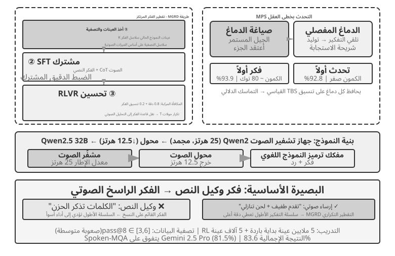
التجربة 9-4 ★★★: استخدام Step-Audio R1 للاستدلال المنطوق الشامل
تستخدم هذه التجربة Step-Audio R1 لمقارنة العديد من التكوينات في مهام التفكير المنطوق والحوار. يتكون النموذج من أداة تشفير الصوت، ومحول الصوت، ووحدة فك ترميز Qwen2.5 32B، ويتطلب نشر وحدات معالجة الرسومات المتعددة.
تقوم هذه التجربة بتقييم مهمتين: Spoken-MQA (أسئلة الرياضيات المنطوقة) تختبر ما إذا كان النموذج يمكنه إجراء تفكير رياضي متعدد الخطوات بعد سماع مشكلة معروضة شفهيًا؛ URO-Bench (معيار الحوار الشفهي الصيني) يعمل على تقييم جودة الحوار المفتوح.
تنقسم تكوينات الاختبار إلى بعدين. الأول هو توقيت التفكير: تكوين TBS (التفكير قبل التحدث) الكامل، والذي يعمل كخط أساسي للتحكم غير المقيد بزمن الاستجابة، يولد جميع الأفكار قبل التحدث. لتقليل زمن الوصول، تقدم MPS نوعين مختلفين من "التفكير أثناء التحدث" - Speak-First (يُسمى أيضًا spkfirst، زمن انتقال صفري، مع بدء التحدث والتفكير في وقت واحد) و Think-First (يُسمى أيضًا thkfirst، في انتظار قيام الدماغ المفكر بإنتاج الجزء الأول قبل التحدث، مع زمن وصول يبلغ حوالي 80 رمزًا). البعد الثاني هو الهندسة المعمارية: بنية الدماغ المزدوج المتوازية لـ MPS مقابل TBS التقليدي ذو النموذج الواحد.
يقارن الجدول 9-1 الدقة الرياضية ودرجات الحوار للتوقيتات المختلفة وتكوينات البنية.
جدول 9-1 مقارنة تكوينات الاستدلال المنطوق لـ Step-Audio R1
التكوين Spoken-MQA URO-Bench أجب مباشرة دون تفكير (الأساس) 70.6% 77.4 MPS Speak-First (زمن الوصول صفر) 92.8% 82.5 MPS Think-First (كمون يقارب 80 رمزًا) 93.9% 84.8 TBS كامل (بدون قيود على الكمون) 93.0% — من النتائج المثيرة للاهتمام أن التحدث أولاً له تأثير ضئيل على مهام التفكير (92.8% قريب من 93.0%) لتكوين TBS الكامل. والسبب هو أن بداية CoT (سلسلة الأفكار) عادة ما تعيد صياغة محتوى المشكلة ولم تدخل بعد في المنطق الحقيقي. ولذلك، حتى لو بدأ النموذج في التفكير بالتزامن مع التحدث، فلن تتأثر الدقة النهائية إلا نادرًا. هناك تفاصيل أخرى جديرة بالملاحظة وهي أن Think-First (93.9%) أعلى قليلاً من تكوين TBS الكامل غير المقيد بزمن الوصول (93.0%). أحد التفسيرات المحتملة هو أن إنتاج الأفكار في أجزاء وتحويلها قطعة تلو الأخرى إلى كلام قد يعمل مثل الإشراف خطوة بخطوة وتحسين الأداء؛ ومع ذلك، فإن الاختلاف يقع ضمن هامش الخطأ ولا ينبغي الإفراط في تفسيره.
الحل 3 يدمج التفكير في نموذج واحد - الإدراك الأكثر أناقة لـ "التفكير أثناء التحدث" - ولكن السعر هو بالضبط "الهدف المتحرك" من بداية هذا القسم: يجب أن يكون أحد النماذج هو أقوى مفكر ومتحدث في الوقت الفعلي، ومع تطور كلتا الإمكانيتين بسرعة، يجب إعادة تدريب المسار الموحد مرارًا وتكرارًا لمواكبة التقدم. ومن هنا انقسام الصناعة في وقت كتابة هذا التقرير: المنتجات الحدودية التي ترغب في مبادلة أحدث العقول حسب الرغبة (GPT-Live، Grok Voice، Pine AI) تراهن في الغالب على فصل الحل 2، في حين أن الحل 3 يناسب المنتجات التي تسعى إلى الطبيعة المطلقة ويمكنها استيعاب تكلفة التدريب المتخصص. ولا يحل أي منهما محل الآخر؛ إنها مقايضة بين القدرة على التبادل في نموذج التفكير والتفكير والكلام الأكثر تكاملاً.
الواجهة بين سريع وبطيء: ما الذي يمكن تمريره إلى جانب النص¶
(تبتعد هذه المناقشة عبر السيناريوهات لفترة وجيزة عن التركيز الرئيسي للفصل على الصوت.) يكشف الحل 2 عن بُعد تصميمي مهمل: عندما يمرر التفكير البطيء رسالة إلى التفكير السريع، فإنه يستخدم قناة النص (اقتراح عبر شريط الحالة). من السهل فهم النص وتصحيح أخطائه، ولكنه قناة ضيقة، حيث يتم ضغط الحالة الوسيطة الغنية للمفكر البطيء في بضع جمل. فهل يجب أن تكون الواجهة بين السريع والبطيء نصًا على الإطلاق؟
في الألعاب في الوقت الفعلي، وهي واحدة من أكثر الإعدادات حساسية للتوقيت، من الممكن اتباع نهج أكثر مباشرة: الجسر الكامن5. قم بتجميد كل من النموذج الصغير المسؤول عن التغذية الراجعة السريعة (إنتاج العشرات من الإجراءات في الثانية) والنموذج البطيء المسؤول عن التفكير (إنتاج فكرة واحدة في الثانية)، ثم قم بتدريب "جسر" صغير فقط يتكون من بضع عشرات الملايين من المعلمات بينهما. يعرض هذا الجسر استنتاجات الحالة المخفية للنموذج البطيء مباشرة في عدد قليل من "الرموز المميزة" ويدرجها في مدخلات النموذج السريع، مثلما تقوم النماذج متعددة الوسائط بإدراج الرموز المرئية. يؤدي هذا إلى تجاوز الرحلة ذهابًا وإيابًا من الفكرة إلى النص والعودة إلى التمثيل الداخلي. عبر العديد من ألعاب Atari، تتفوق قناة الفضاء الكامنة بشكل كبير على القناة النصية التقليدية (+26% إلى +82% في بعض الألعاب) مع إضافة حوالي 5 ميلي ثانية فقط لكل خطوة، وهي سريعة بما يكفي لتلبية متطلبات الوقت الفعلي.
يرسم نفس العمل حدودًا صادقة: يعتمد ما إذا كان التعاون السريع والبطيء يساعد على ما إذا كان عنق الزجاجة في المهمة هو "لا أستطيع التفكير فيها" أو "لا أستطيع الرد في الوقت المناسب". الجسر يؤتي ثماره فقط عندما يكون المفكر البطيء أفضل حقًا من المفاعل السريع (عبر الألعاب، يصل هذا الارتباط إلى r≈0.9)؛ حيث تكون المهمة مجرد مسابقة لسرعة رد الفعل، فإن أفضل جسر يكون عديم الفائدة. يمتد الحكم إلى ما هو أبعد من الألعاب - فهو يستعرض السؤال ذاته الذي سيواجهه استخدام الكمبيوتر لاحقًا في هذا الفصل: متى يستحق "الاستراتيجي البطيء" دعوته، ومتى يضيف فقط زمن الوصول؟
من البداية إلى النهاية أو المعيارية، لا تزال جودة طبقات الإدراك والتنفيذ مهمة. تعمل النماذج الشاملة على إصلاح زمن الاستجابة على المستوى المعماري، لكن الأساسيين - السمع بدقة والتحدث بشكل طبيعي - لا يتم إصلاحهما عندما تتغير البنية. يتوافق السمع الدقيق مع الإدراك الصوتي المتدفق للنموذج 1؛ ننتقل هنا إلى طبقة التنفيذ للتحدث بشكل طبيعي: تركيب الكلام الشبيه بالإنسان.
المزيد من تركيب الكلام الشبيه بالإنسان¶
إن "كمال" تحويل النص إلى كلام التقليدي هو المشكلة تمامًا: فالكلام الذي يكون بطلاقة لا تشوبه شائبة، بدون توقفات أو كلمات حشو، يبدو بشكل لا لبس فيه أنه تم إنشاؤه آليًا. "عيوب" الكلام البشري - التوقفات والحشو ("مممم"، "آه"، "أنت تعلم")، والتكرار العرضي - ليست عيوبًا ولكنها علامات طبيعية لعملية التفكير، حيث تقول للمستمع "أنا أفكر" أو "لست متأكدًا تمامًا". ومع ذلك، يمكن للذكاء الاصطناعي أن يولد استجابة أسرع من تلك الاستجابة التي يمكن نطقها بصوت عالٍ، وتصل مخرجاتها بطلاقة وكاملة؛ قم بتوليفها كما هي وتصبح طبيعتها الاصطناعية واضحة.
الحل: تفويض القرارات حول مكان التوقف المؤقت والنغمة التي يجب استخدامها إلى LLM الرئيسي. لا يقوم LLM بإخراج النص فحسب، بل يقوم أيضًا بإخراج رموز التحكم: يشير [THINKING] إلى توقف مؤقت للتفكير لمدة 1-2 ثانية وصوت حشو ("مم...")؛ يشير [SEARCHING] إلى عبارات توقف وتردد أقصر ("أنت تعرف..."، "كيف يجب أن أضعها")؛ [EMO:happy] يضبط النغمة والعروض؛ يتحكم [SPEED:0.8x] في معدل التحدث. فقط LLM يعرف ما إذا كان يعمل على سؤال معقد ويجب أن يتوقف مؤقتًا، أو ما إذا كان المستخدم قد نفد صبره ويجب عليه الإسراع، أو ما إذا كانت هذه محادثة خاملة ويجب أن تبدو مفعمة بالحيوية.
في هذا المخطط، تعمل تحويل النص إلى كلام (TTS) كمولد متعدد الوسائط، حيث تأخذ رموز النص + التحكم كمدخلات ومخرجات صوتية. يقوم بتجميع الكلام بشكل طبيعي للنص العادي، ويولد صوتًا غير لغوي مطابق لرموز التحكم: [THINKING] يولد "um..."، يولد [SIGH] تنهيدة، [LAUGH:small] يولد ضحكة خفيفة، [BREATH] يولد صوت شهيق.
هناك مساران للتنفيذ: الأول هو تطوير تحويل النص إلى كلام (TTS) الخاص مع دعم أصلي لرموز التحكم (الخيار الأكثر مرونة، ولكنه يتطلب فريقًا متخصصًا)؛ والآخر يستخدم استنساخ الصوت. قم بإعداد العشرات من المقاطع المرجعية لنفس الشخصية الافتراضية، والتي تغطي مختلف المشاعر والسرعات والأنماط، ثم حدد المقطع الأفضل تطابقًا لكل مجموعة من رموز التحكم عند الاتصال بـ TTS API مثل ElevenLabs أو Fish Audio. ويمكن نشر هذا النهج في غضون أسابيع.
التجربة 9-5 ★★: التحكم في تحويل النص إلى كلام (TTS) المعتمد على الرمز استنادًا إلى صوت السمكة
استخدم إمكانية استنساخ الصوت في Fish Audio S1 (يلزم فقط 3-10 ثوانٍ من الصوت المرجعي للاستنساخ من دون أمثلة لنفس الجرس). أنشئ مكتبة مكونة من 24 مقطعًا صوتيًا مرجعيًا، تغطي المشاعر (محايد/سعيد/محبط/تفكير) x السرعة (عادي/سريع/بطيء) x النمط (رسمي/غير رسمي)، يبلغ طول كل منها حوالي 5 ثوانٍ.
LLM
تقوم طبقة التنفيذ بتوزيع الرموز المميزة وتعيينها إلى الصوت المرجعي المقابل: يقوم
[EMO:happy][SPEED:fast]بتعيين مرجع "Happy+Fast+Casual"؛ يقوم[THINKING]بتعيين مرجع "التفكير+البطيء+الرسمي" (مع إيقاع التوقف المؤقت والنغمة المترددة)؛ يقوم[EMO:neutral][SPEED:normal]بتعيين المرجع "محايد + عادي + رسمي". يضمن تطبيق Fish Audio صوتًا متسقًا عبر المقاطع المرجعية المختلفة، مع اختلاف النغمات والعواطف فقط.قارن بين ثلاثة تكوينات: لا توجد رموز تحكم (بطلاقة ولكنها آلية ومن الواضح أنها تم إنشاؤها بواسطة الذكاء الاصطناعي)، ومقطع مرجعي واحد (طبيعي ولكن رتيب عاطفيًا)، ومكتبة متعددة المراجع (مبهجة وسريعة عند تأكيد المعلومات، مع توقفات طبيعية قبل التوضيحات وتسليم إجمالي قريب من التسليم الذي يقدمه ممثل خدمة العملاء البشري).
استخدام الكمبيوتر: وكلاء أتمتة واجهة المستخدم الرسومية¶
ربما لاحظت الآن أن هذا الفصل يخصص مساحة أكبر بكثير للتعبير عن السيناريوهين التاليين. هذا متعمد. ومن بين الأنظمة متعددة الوسائط في الوقت الحقيقي، حققت التكنولوجيا الصوتية تقدمًا كبيرًا، وبالتالي توفر أفضل نقطة مرجعية. لقد تتبعت المنحنى الكامل من المشكلة الأصلية - الكمون المفرط في خطوط الأنابيب التسلسلية - من خلال نماذج نهاية إلى نهاية، والتفاعل المزدوج الكامل، والتفكير أثناء التحدث، إلى التصميمات الناضجة نسبيًا اليوم. ولهذا السبب روينا قصتها كاملة. أثناء قراءتك لأقسام استخدام الكمبيوتر والروبوتات، قارنها بهذا المسار: إلى أي مدى تقدم كل مجال، وأين بقي كل مجال عالقًا؟
تبدو هذه السيناريوهات الثلاثة مختلفة ولكنها تواجه نفس التحديات الأساسية: الإدراك في الوقت الفعلي، واتخاذ القرار بزمن وصول منخفض، والتفاعل المستمر. بعد ذلك، ننتقل إلى التفاعل البصري، أو استخدام الكمبيوتر، لتوسيع المنظور من الطريقة السمعية إلى الطريقة البصرية: ماذا لو لم يتمكن الوكيل من فهم الكلام فحسب، بل يمكنه أيضًا "رؤية" الشاشة وتشغيل واجهتها الرسومية؟
يسمح استخدام الكمبيوتر، المعروف أيضًا باسم أتمتة واجهة المستخدم الرسومية، للذكاء الاصطناعي باستخدام البرامج مثل الإنسان من خلال مراقبة الشاشة وتشغيل الماوس ولوحة المفاتيح - على سبيل المثال، فتح متصفح للبحث عن المعلومات، أو ملء البيانات في تطبيق جدول بيانات، أو ضبط التكوينات في إعدادات النظام. جوهرها هو حلقة الإدراك والتفكير والفعل (الشكل 9-7):
- يأخذ الوكيل لقطة شاشة للشاشة الحالية.
- يتلقى النموذج متعدد الوسائط لقطة الشاشة وتعليمات المهمة، ويخرج فكرة وإجراءًا محددًا.
- تنفذ طبقة التنفيذ الإجراء في البيئة الحقيقية (تحريك الماوس، والنقر، وكتابة النص، وما إلى ذلك).
- وينتظر استجابة الواجهة، ويأخذ لقطة شاشة أخرى، ويدخل في تكرار الحلقة التالية.
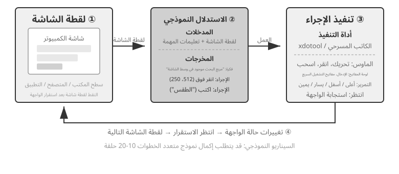
هناك ثلاثة أبعاد تصميم رئيسية في هذه الحلقة: مساحة العمل (ما هي العمليات التي يمكن للوكيل تنفيذها)، والأساس المرئي (كيفية العثور على العنصر المستهدف في لقطة الشاشة)، وهندسة النموذج (كيفية إنشاء الإجراء الصحيح من لقطة الشاشة).
تصميم مساحة العمل¶
يحدد Anthropic ثلاثة أنواع من الأدوات التي تشكل قدرة تفاعل كاملة (الشكل 9-8):
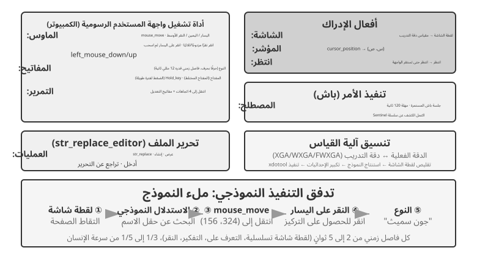
أداة تشغيل واجهة المستخدم الرسومية (أداة computer): تتضمن عمليات الماوس النقل (mouse_move)، والنقر باليسار/اليمين/الوسطى، والنقر المزدوج أو النقر الثلاثي، والسحب (left_click_drag)، وإجراءات الضغط/التحرير الأكثر دقة (left_mouse_down وleft_mouse_up). يدعم التمرير (scroll) أربعة اتجاهات ويمكن دمجه مع مفاتيح التعديل. تتضمن عمليات لوحة المفاتيح كتابة حرف بحرف (type، مع فاصل زمني قدره 12 مللي ثانية بين الأحرف لمحاكاة الكتابة الحقيقية)، ومجموعات المفاتيح (key، على سبيل المثال، Ctrl+C)، والإمساك بالمفتاح (hold_key). تتضمن إجراءات الإدراك التقاط لقطة شاشة واسترداد موضع المؤشر (cursor_position) والانتظار (wait).
أداة تنفيذ الأوامر (أداة bash): توفر جلسة طرفية bash مستمرة مع مهلة مدتها 120 ثانية. يستخدم سلسلة خافرة للكشف عن اكتمال الأمر ويحافظ على حالة البيئة عبر استدعاءات متعددة (على سبيل المثال، بعد cd إلى دليل، يبقى الاستدعاء التالي في هذا الدليل).
أداة تحرير الملفات (str_replace_editor): تتيح التحرير الآمن من خلال مطابقة السلسلة وتدعم عمليات العرض والإنشاء والاستبدال والإدراج والتراجع. إنه أكثر دقة من الكتابة فوق ملف بأكمله وأقل احتمالية لتعديل محتوى غير ذي صلة عن طريق الخطأ.
التجربة 9-6 ★: تشغيل العرض التوضيحي لاستخدام الكمبيوتر Anthropic
تشتمل الحاوية على بيئة سطح مكتب Ubuntu كاملة مع متصفح ومحطة طرفية وأدوات شائعة أخرى. تتلقى الواجهة الأمامية تعليمات المهمة، وترسل الواجهة الخلفية تلك التعليمات ولقطات الشاشة إلى Claude، ويقوم النموذج بإرجاع إجراءات مثل تحريك الماوس والنقر والكتابة. يقوم النظام بعد ذلك بتنفيذ تلك الإجراءات على سطح المكتب الافتراضي.
الملاحظة الأساسية: تستغرق كل دورة عمل من 2 إلى 5 ثوانٍ، مما يجعل النظام أبطأ بكثير من الإنسان. ومع ذلك، فإنه يوضح التخطيط الجيد للمهام المشتركة ويقسمها بشكل مستقل إلى تسلسلات عمل معقولة.
تحديد الموقع البصري (Visual Grounding)¶
في كل تكرار للحلقة، يحتاج النموذج إلى تحديد موقع العنصر المستهدف بدقة في لقطة الشاشة - "أين يوجد مربع البحث؟" "ما هي إحداثيات زر الإرسال؟" هذه هي مشكلة الإرساء البصري. يوجد حاليًا طريقتان رئيسيتان: أحدهما هو تحويل تحديد الموقع إلى مشكلة الاختيار من متعدد — أولاً قم بإضافة تعليقات توضيحية لعناصر الواجهة بالأرقام، ويحتاج النموذج فقط إلى تحديد عنصر واحد؛ والآخر هو التنبؤ بالإحداثيات النقية — السماح للنموذج "بالنظر" إلى لقطة الشاشة والإبلاغ عن الإحداثيات مباشرة، تمامًا مثل الإنسان. يتضمن نهج الاختيار المتعدد طريقتين للتنفيذ: تعليق توضيحي مرئي خالص (مجموعة العلامات الأصلية، باستخدام نموذج تجزئة لتقسيم المناطق المرشحة في الصورة) و فهرسة العناصر المنظمة (DOM/شجرة إمكانية الوصول، قراءة البنية المتأصلة للواجهة مباشرة). الميزة الشائعة لمنهج الاختيار المتعدد هي أنه يحول المشكلة المفتوحة المتمثلة في "العثور على الزر في لقطة الشاشة والتنبؤ بإحداثياته" إلى مشكلة مغلقة تتمثل في "اختر واحدًا من العناصر المشروحة بالفعل" - تمامًا كما أن الإجابة على أسئلة الاختيار المتعدد أسهل بشكل صحيح من أسئلة ملء الفراغات في الاختبار، يحتاج النموذج فقط إلى قول "انقر فوق [123]" بدلاً من "انقر فوق الزر الأزرق على بعد 200 بكسل تقريبًا على يمين الصفحة". الزاوية العلوية اليسرى من الشاشة."
مجموعة العلامات: طريقة التعليق التوضيحي المرئي.
تم اقتراح مجموعة العلامات الأصلية (SoM) بواسطة Microsoft Research في عام 2023، في البداية لفتح إمكانيات الإرساء البصري لـ GPT-4V. إنها طريقة مرئية بحتة: تستخدم نماذج تجزئة الصور (SAM، SEEM، وما إلى ذلك) لتقسيم المناطق المرشحة تلقائيًا في لقطة الشاشة، وتراكب علامة مرقمة في كل منطقة، ويرى النموذج صورة بها أرقام. يحتاج النموذج فقط إلى الإبلاغ عن الرقم، ويقوم النظام بتحويله إلى الإحداثيات المركزية للمنطقة المقابلة. لا تتطلب العملية برمتها DOM أو أي بنية واجهة داخلية، لذا فهي قابلة للتطبيق بشكل متساوٍ على برامج سطح المكتب الأصلية وواجهات الألعاب - طالما أن نموذج التجزئة يمكنه تحديد المناطق المرشحة.
فهرسة العناصر المنظمة: تنفيذ منظم لفكرة SoM على الويب.
عندما توفر الواجهة نفسها معلومات منظمة، يمكن أن تكون التعليقات التوضيحية أكثر دقة. قبل العرض، تحدد صفحات الويب الحديثة بنية عنصر كاملة (شجرة DOM) والأدوار الدلالية التي تحدد الأزرار وحقول الإدخال وعناصر التحكم الأخرى. توفر أشجار إمكانية الوصول معلومات مماثلة للعديد من تطبيقات سطح المكتب. بدلاً من مطالبة نموذج التجزئة بتخمين المنطقة التي تمثل زرًا من وحدات البكسل وحدها، يمكن للنظام الاستعلام عن الواجهة مباشرةً بحثًا عن عناصرها القابلة للنقر. تقوم أنظمة وكيل الويب مثل browser-use بهذا بالضبط: فهي تقوم بتعداد وترقيم العناصر التفاعلية من DOM. هذا تنفيذ منظم لفكرة SoM للويب (الشكل 9-9). تتكون العملية من أربع خطوات:
- الحصول على التمثيل المنظم (شجرة DOM) ومعلومات إمكانية الوصول للصفحة من خلال واجهة تصحيح الأخطاء في المتصفح (CDP، بروتوكول Chrome DevTools)
- اكتشاف العناصر التفاعلية تلقائيًا (الأزرار، ومربعات الإدخال، والروابط، وما إلى ذلك)
- قم بتعليق كل عنصر تفاعلي بمعرف فريد وارسم المربعات المحيطة في لقطة الشاشة
- قم بإنشاء قائمة نصية في نفس الوقت تصف العنصر المقابل لكل معرف
Screenshot: [Key elements in the image are annotated with IDs like [1], [2], [3], [4]]
Elements:
[1] <input type="text" placeholder="Search" aria-label="Search" />
[2] <button id="submit-btn" aria-label="Submit form" />
[3] <input type="text" placeholder="Enter your name" value="" />
[4] <a href="/docs" aria-label="Documentation" />
يحتاج النموذج فقط إلى إخراج معرف، ويقوم النظام تلقائيًا بالنقر فوق مركز العنصر المقابل. لا يحفظ هذا النهج الرموز المميزة لأنه لا يزال يتعين إرسال جميع بيانات التعليقات التوضيحية إلى النموذج، ولكنه يوفر توطينًا دقيقًا ومستقرًا مع تجنب الاكتشافات المفقودة والإيجابيات الخاطئة التي يمكن أن تقدمها نماذج التجزئة.
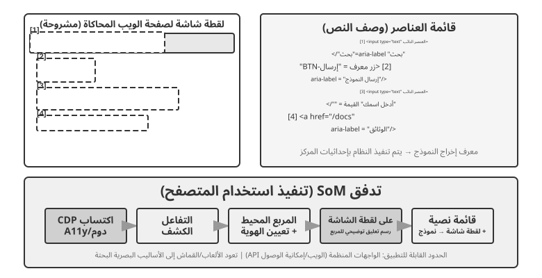
توقع الإحداثيات النقية.
يتخطى المسار الثالث التعليق التوضيحي ويطلب من النموذج إخراج الإحداثيات مباشرة. تعتمد أنظمة مثل SeeClick وClaude على نماذج الرؤية المدربة على مجموعات بيانات ضخمة من لقطات شاشة واجهة المستخدم الرسومية المقترنة بمواضع العناصر. تتعلم هذه النماذج كيفية تعيين أوصاف اللغة الطبيعية (على سبيل المثال، "انقر فوق زر الإرسال") مباشرة إلى إحداثيات لقطة الشاشة الدقيقة، بالاعتماد على الإدراك البصري مثلما يفعل المستخدم البشري.
في مخططات التنبؤ بالإحداثيات، يعتمد فهم النموذج للإحداثيات بشكل كبير على الدقة المستخدمة أثناء التدريب (الشكل 9-10). تم تدريب Claude باستخدام XGA (1024×768)، WXGA (1280×800)، وFWXGA (1366×768). إذا لم تتطابق دقة لقطة الشاشة المدخلة، فستتغير الإحداثيات المتوقعة للنموذج بشكل منهجي - مثل قياس المسافة على خريطة صغيرة ثم تطبيقها مباشرة على خريطة كبيرة. لذلك، يجب تنفيذ آلية قياس إحداثيات ثنائية الاتجاه في طبقة الأداة، ويجب تحديد دقة الهدف بناءً على نسبة العرض إلى الارتفاع لتجنب التمدد غير المنتظم الذي يشوه الصورة وبالتالي يؤدي إلى تحيز الحكم المنسق. على سبيل المثال، إذا كانت دقة الشاشة الفعلية هي 2560×1440 (16:9)، فإن الهدف الأكثر ملاءمة بين الخيارات الثلاثة المدعومة لـ Claude هو FWXGA (1366×768)، الذي يتمتع بنسبة عرض إلى ارتفاع أقرب إلى 16:9. تم تغيير حجم لقطة الشاشة بشكل متناسب إلى 1366 × 768 وإدخالها في النموذج؛ بعد أن يقوم النموذج بإخراج إحداثيات النقر (683، 384)، يتم تعيينها عكسيًا للإحداثيات الحقيقية (683×2560/1366، 384×1440/768) ≈ (1280، 720). على العكس من ذلك، إذا تم تمديد صورة 16:9 بالقوة إلى 1024×768 4:3، فسيتم ضغط الصورة أفقيًا، مما يتسبب في تحول الإحداثيات المتوقعة للنموذج بشكل منهجي.
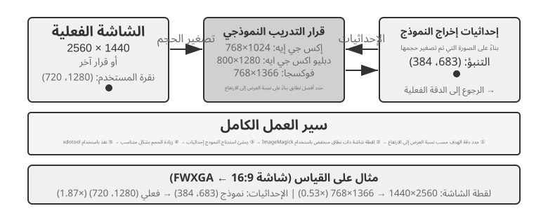
يمكن تلخيص الاختيار من بين المسارات الثلاثة على النحو التالي: عند توفر المعلومات المنظمة، قم بإعطاء الأولوية لفهرسة DOM/accessibility-tree للحصول على أدق تحديد للموقع وأكثره ثباتًا. عندما لا يكون متاحًا—في برامج سطح المكتب الأصلية مثل Photoshop أو الواجهات المعروضة على قماش/WebGL أو الألعاب —استخدم إما التعليقات التوضيحية المرئية (مسار SoM الأصلي) أو التنبؤ الإحداثي. يعمل التعليق التوضيحي المرئي على تحويل تحديد الموقع إلى مشكلة متعددة الاختيارات، مما يجعلها أكثر ملاءمة للنماذج ذات الأغراض العامة دون تدريب متخصص. يلغي التنبؤ الإحداثي خطوة التعليق التوضيحي ويكون أكثر مباشرة للنماذج المدربة خصيصًا على توطين واجهة المستخدم الرسومية. لا يزال كلا النهجين يواجهان صعوبة في التعامل مع العناصر الصغيرة والواجهات الكثيفة.
التجربة 9-7 ★: استخدام استخدام المتصفح لتنفيذ عمليات المتصفح الآلية
ادمج Playwright، وهو إطار عمل لأتمتة المتصفح، مع نموذج متعدد الوسائط لتنفيذ عمليات المتصفح المدفوعة بتعليمات اللغة الطبيعية. تمكين تصور SoM وحفظ لقطات الشاشة مع المربعات المحيطة المشروحة قبل كل قرار.
مهمة الاختبار "افتح Google واستفسر عن طقس سان فرانسيسكو": بعد بدء تشغيل النظام، تعرض لقطة الشاشة صفحة بحث Google، مع كل العناصر التفاعلية الموضحة بمربعات محيطة حمراء وأرقام معرفات (شريط العناوين
[1]، مربع البحث[2]، زر البحث[3]، زر "ضربة حظ"[4]، إلخ.) → يقوم النموذج بتحليل والنقر فوق[2](الزر مربع البحث) → يكتسب مربع البحث التركيز وأنواع النماذج "طقس سان فرانسيسكو اليوم" → ينقر النموذج على[3](زر البحث) → تنتقل الصفحة إلى نتائج البحث، وتعرض لقطة الشاشة التالية العناصر المشروحة داخل بطاقة الطقس، مما يسمح للنموذج بالتعرف على واستخراج المعلومات مثل درجة الحرارة والظروف الجوية. تستغرق العملية برمتها 5 خطوات وحوالي 20 ثانية.
وكيل استخدام الكمبيوتر الذي يمكنه مشاهدة الرسوم المتحركة وسماع الصوت¶
حتى الآن، يقوم تصور استخدام الحاسوب على افتراض ضمني مفاده أن الشاشة ثابتة: يلتقط الوكيل لقطة شاشة، ويستدل على الخطوة التالية، ثم ينقر ويلتقط لقطة جديدة. لكن الشاشات الحقيقية تعرض مقاطع فيديو وإشعارات خاطفة تختفي خلال ثوانٍ، كما تنقل أصوات الاجتماعات. والوكيل الذي لا «يفتح عينيه» إلا مرة كل ثلاث إلى خمس ثوانٍ ولا يسمع شيئًا، يظل أعمى وأصم عن كل ما يحدث بين إطارين. لذلك تظل مهام يومية كاملة بعيدة عن متناول وكلاء استخدام الحاسوب الحاليين، مثل متابعة تسجيل للشاشة، والانضمام إلى اجتماع، واتباع توجيه صوتي، والتقاط مربع حوار قبل اختفائه.
ما يحتاج حقًا إلى إعادة تصميم هنا ليس "واجهة الإجراء"، بل "واجهة المراقبة"6. الفكرة الأساسية هي فصل الملاحظة (المستمرة والتكيفية ومتعددة الوسائط) عن الإجراء (المنفصل)، وإنشاء طبقة برمجية وسيطة إدراكية تقع بين البيئة وأي نموذج جاهز لاستخدام الكمبيوتر دون الحاجة إلى إعادة التدريب. يمكننا أن نسمي ذلك واجهة مراقبة الوكيل والكمبيوتر (AOI). لديها ثلاثة مكونات "بوابة": أولاً، التقاط الإطارات الرئيسية بين الإطارات—استخدم بوابة بكسل رخيصة جدًا لتخطي الإطارات التي لم تتغير تقريبًا، ثم استخدم نموذجًا صغيرًا لتحديد ما إذا كان قد حدث تغيير ذو معنى، مع التقاط إطار فقط عند حدوث تغيير، مما يؤدي إلى تكلفة قريبة من الصفر للشاشات الثابتة؛ ثانيًا، نسخ الكلام حسب مستوى الصوت - لا يتم استدعاء التعرف على الكلام إلا عندما يكون هناك صوت، مما يمنح الوكيل "آذانًا" لأول مرة؛ ثالثًا، والأكثر أهمية، تحويل الملاحظات إلى أوصاف نصية ثابتة — اجعل النموذج يصف الإطار الملتقط في جملة واحدة (على سبيل المثال، "أفادت النافذة المنبثقة للتو أنه تم تغيير تاريخ الإصدار إلى 28 أبريل")، و حتى إذا تم مسح الصورة الأصلية لاحقًا من السياق، فسيظل هذا النص في الذاكرة، حاملاً المعلومات الديناميكية إلى الأمام في شكل نصي.
النتيجة غير المتوقعة هي أن العامل الحاسم ليس اختيار الإطارات بقدر ما هو تحويل الإطارات المختارة إلى نص ثابت، لأن النص هو الصيغة التي تتعامل معها الوكلاء اللغوية بأعلى موثوقية. وعبر ثمانية نماذج، من فئة 7B إلى النماذج المتقدمة، حققت هذه البرمجيات الوسيطة مكاسب تراوحت بين 17 و48 نقطة مئوية من دون إعادة تدريب. وكانت الفجوة أوضح في المهام الصوتية: فبعد إضافة طبقة الإدراك، استطاع الوكيل أخيرًا إكمال مهام كان يسمعها من قبل ولا يستطيع تنفيذها. ومع ذلك، لا توجد تهيئة واحدة تناسب الجميع؛ ففي بعض النماذج الحديثة، يؤدي إدخال عدد مفرط من رموز الصورة إلى مزاحمة التفكير من السياق وخفض الأداء. لذلك يجب اختيار المكونات بما يلائم النموذج، لا تشغيلها كلها دفعة واحدة. وهذا هو درس المفاضلة نفسه بين التنبؤ بمجموعة العلامات والتنبؤ بالإحداثيات: لا حل سحريًا في تصميم الإدراك، بل تهيئة تناسب خصائص كل نموذج.
الهاتف المحمول: حواجز النظام البيئي أصعب من التكنولوجيا¶
يتوسع استخدام الكمبيوتر أيضًا ليشمل الأجهزة المحمولة. تختلف أنظمة الهاتف المحمول وسطح المكتب من الناحية الفنية: فبدلاً من الاعتماد على إحداثيات الماوس وإدخال لوحة المفاتيح، تستخدم مساحة الإجراء المحمول عادةً خدمة إمكانية الوصول للنظام API (على سبيل المثال، AccessibilityService لنظام Android) لقراءة عناصر الواجهة وإصدار النقرات أو إدخال النص. ويتحول التفاعل أيضًا من مؤشر الماوس إلى إيماءات اللمس، مما يغير معنى الإحداثيات. قد يشير نفس موضع (x, y) إلى النقر، أو الضغط لفترة طويلة، أو نقطة البداية للتمرير، لذلك يجب أن يحدد الإجراء أيضًا نوع الإيماءة. تعمل معايير الهاتف المحمول مثل AndroidWorld، التي تم تقديمها في الفصل السادس، على تقييم قدرة الوكيل على إكمال المهام في التطبيقات الحقيقية ضمن مساحة العمل هذه.
ومع ذلك، فإن ما يعيق حقًا استخدام الكمبيوتر المحمول ليس في كثير من الأحيان هذه الاختلافات التقنية، بل حواجز النظام البيئي. حاولت بعض الشركات المصنعة للهواتف دمج مساعدي الذكاء الاصطناعي في الهواتف المخصصة للمستهلكين حتى يتمكن المساعدون من تشغيل التطبيقات اليومية تلقائيًا مثل WeChat وTaobao وAlipay، لكنهم واجهوا بسرعة قيودًا على النظام الأساسي.
يكشف هذا عن تحدي فريد لاستخدام الكمبيوتر: حواجز النظام البيئي. السبب الأساسي وراء هذه القيود هو تضارب نماذج الأعمال. المنطق الأساسي لتحقيق الدخل لتطبيقات الإنترنت التقليدية هو حركة المرور والاهتمام: يرى المستخدمون الإعلانات أثناء التمرير عبر الخلاصات، ويتم توجيههم بواسطة خوارزميات التوصية عند البحث عن المنتجات، ويقومون بعمليات شراء دافعة أثناء تصفح الصفحات. عندما يعمل الوكيل نيابة عن المستخدم، يتم تجاوز سلسلة تحقيق الدخل هذه بالكامل: يتجاهل الذكاء الاصطناعي الإعلانات، ولا يقوم بأي عمليات شراء دافعة، ويتجه مباشرة نحو الهدف، وينهي المهمة، ويغادر. بالنسبة للمنصات التي تعتمد على الإعلانات وحركة المرور، تؤدي كل عملية وكيل إلى تآكل أساس نموذج العمل.
وهذا يعني أن استخدام الكمبيوتر لا يواجه إجراءات فنية مضادة مثل اختبارات CAPTCHA فحسب، بل يواجه أيضًا تضاربًا هيكليًا في المصالح. سيكون من الصعب حل هذا الصراع على المدى القصير ويشكل عائقًا أكبر أمام اعتماد المستهلك من المشاكل التقنية البحتة.
الأداء الآني: التحدي الأساسي الذي لم يتم حله¶
OSWorld، الذي تم وصف منهجية التقييم الخاصة به في الفصل 6، هو معيار يستخدم على نطاق واسع لاستخدام الكمبيوتر ويختبر قدرة الوكيل على إكمال المهام عبر التطبيقات في بيئات Ubuntu/Windows/macOS الحقيقية. حققت النماذج المبكرة ذات الأغراض العامة نسبة نجاح تبلغ حوالي 20% فقط وفقًا لهذا المعيار. وقد أدت النماذج المتخصصة اللاحقة ونماذج الأغراض العامة الأكثر قوة إلى دفع معدل النجاح إلى أعلى بشكل مستمر، وتقترب تدريجيًا من الأداء على المستوى البشري حتى كتابة هذه السطور. ومع ذلك، فإن معدل النجاح لا يزال بعيدًا عن خط النهاية، فقد تحول عنق الزجاجة الحقيقي من "هل يمكن القيام بذلك بشكل صحيح؟" إلى "هل يمكن أن تفعل ذلك بسرعة؟"
تسفر دراسة كفاءة OSWorld-Human عن نتيجة مثيرة للقلق: حتى عندما تنجح المهمة في نهاية المطاف، يحتاج الوكيل إلى خطوات أكثر بشكل ملحوظ من الإنسان، ويستمر زمن الوصول للاستدلال لكل خطوة في النمو مع تقدم المهمة - كلما طال السياق، كلما كان اتخاذ النموذج أبطأ، لذلك غالبًا ما تستغرق الخطوات المتأخرة وقتًا أطول بكثير من الخطوات المبكرة. إن تعديل تنسيق المستند الذي يستغرق الإنسان عشرات الثواني قد يستغرق الوكيل عدة دقائق حتى يكتمل. الدقة على المستوى البشري ليست مثل سهولة الاستخدام العملي؛ الكفاءة هي عنق الزجاجة الحقيقي.
يعكس السبب الجذري سيناريو الكلام: في الحلقة التسلسلية "لقطة الشاشة، فكر في النقر"، حتى مع تحسين كل مرحلة إلى أقصى حد، يظل تراكم التأخير خطوة بخطوة غير مقبول. المشكلة الأعمق هي أن استخدام الكمبيوتر اليوم لا يمكنه التفكير في المستقبل على الإطلاق. إذا تمكن الوكيل من التنبؤ بخطوته التالية أثناء تنفيذ الخطوة الحالية - معرفة مكان النقر التالي بينما لا تزال الصفحة قيد التحميل - فيمكن أن يتداخل التفكير مع التنفيذ ويخفض زمن الاستجابة الإجمالي بشكل حاد (نفس الطلب الذي طلبه التفكير أثناء التحدث سابقًا في هذا الفصل والوكيل غير المتزامن "التفكير المستمر" في الفصل 4، والذي أعيد صياغته هنا على أنه تفكير أثناء التشغيل).
على عكس مجال الكلام، لا يوجد حاليًا حل منهجي لتحسين الأداء في الوقت الفعلي لاستخدام الكمبيوتر نفسه - مما يجعل حلقة "لقطة الشاشة - فكر في النقر" أسرع - وتظل عالقة في حلقة منفصلة من لقطات الشاشة إطارًا تلو الآخر. ومع ذلك، فقد ثبت بالفعل أن الحل البديل فعال، باستخدام الفصل السريع والبطيء الذي يظهر بشكل متكرر في هذا الفصل: نظرًا لأنه من الصعب جعل وكيل استخدام الكمبيوتر البطيء أسرع، لا تجعل المستخدم ينتظره. استخدم نموذجين بشكل متزامن: نموذج سريع للكلام ونموذج بطيء لتشغيل الكمبيوتر7. يتعامل النموذج السريع مع المحادثة الصوتية في الوقت الفعلي، بينما يعمل VLM المتطور خطوة بخطوة في المتصفح. يتواصل الاثنان فقط من خلال "عقد نص عادي" بسيط: في كل مرة يقوم فيها الوكيل البطيء بإجراء ما، يقوم بتحديث ملخص الحالة المتداول ("ملء النموذج، لا تزال بحاجة إلى تاريخ ميلادك"). يستخدم الوكيل السريع هذا للرد على المستخدم في الوقت الفعلي وينقل أي معلومات جديدة يقدمها المستخدم شفهيًا إلى الوكيل البطيء. والأهم من ذلك، يجب ألا يقول الوكيل السريع مطلقًا كلمة "تم" حتى يؤكد ملخص الحالة الاكتمال. هذا هو سيناريو "التحدث على الهاتف مع ترك الكمبيوتر يعمل بنفسه." وفي التجارب، أدى هذا الفصل إلى جعل الاستجابات الصوتية أسرع بنحو 15 مرة من النموذج الواحد الذي يعمل ويتحدث في الوقت نفسه (متوسط زمن الوصول 0.58 ثانية مقابل 8.64 ثانية)، دون أي خسارة في معدل نجاح المهمة. قم بإزالة القناة النصية بين السريع والبطيء، وسينهار النجاح إلى الصفر - لم يعد بإمكان المعلومات الأساسية التي يقدمها المستخدمون شفهيًا الوصول إلى المتصفح. هذه هي نفس فكرة الجسر الكامن سابقًا والتفكير أثناء التحدث في سيناريو الكلام: عندما يكون أحد المكونات بطيئًا بطبيعته، دع مكونًا سريعًا يملأ وقت انتظار المستخدم - وهذا "العقد النصي العادي" هو، في الأساس، مفهوم شريط حالة الوكيل الذي تم تقديمه في الفصل الثاني. قد يكون تسريع حلقة استخدام الكمبيوتر بحد ذاته هو الاتجاه البحثي المهم التالي، ولكن إخفاء البطء وراء الفصل السريع والبطيء هو بالفعل إجابة عملية.
التحكم في الروبوت: من التحكم الآني إلى التدريب والتعميم¶
ملاحظة القراءة: يناقش هذا القسم التحكم في الروبوت. توضح التجربة 9-10 طريقة للانتقال من المحاكاة إلى الواقع - يمكن إكمال جزء التدريب في المحاكاة (الخطوات 3-4) باستخدام خادم GPU فقط؛ ومع ذلك، لإعادة إنتاج خط الأنابيب بالكامل من البداية إلى النهاية (بما في ذلك خطوات النشر في العالم الحقيقي)، يلزم وجود أجهزة حقيقية مثل الذراع الآلية SO100. إذا لم تكن مهتمًا حاليًا بالروبوتات، فيمكنك تخطي هذا القسم؛ ولا يؤثر على قراءة الفصول الأخرى.
يحارب وكلاء الصوت الكمون في الطريقة السمعية؛ استخدام الكمبيوتر يفعل ذلك في الطريقة البصرية. عندما يتعين على الوكيل التحكم في روبوت في العالم المادي، يكون زمن الوصول وتعدد الوسائط أكثر صعوبة - فالإجراءات لها عواقب لا رجعة فيها، ويمكن أن يؤدي تصادم واحد إلى إتلاف الكائن أو الروبوت نفسه. يوضح هذا القسم أولاً كيف تقوم الروبوتات بترويض مشكلة التحكم في الوقت الفعلي من خلال بنية مكونة من طبقتين وتقطيع الإجراءات، ثم ينتقل إلى المشكلة الأصعب التي يواجهونها اليوم - التدريب والتعميم: من أين تأتي البيانات، وكيف تنتقل النماذج عبر المهام والمنصات.
الأجهزة ليست عنق الزجاجة. الخوارزميات هي¶
لماذا لم يتم اعتماد الروبوتات على نطاق واسع في البيئات المفتوحة ذات الأغراض العامة؟ هل عنق الزجاجة هو الأجهزة أم الخوارزميات؟ يقدم مشروع XleRobot مثالا مضادا مقنعا: عندما يتم التحكم فيه عن بعد من قبل الإنسان من خلال سماعة الواقع الافتراضي، فإن الروبوت ثنائي الذراع الذي يتكلف أقل من 1000 دولار يمكنه بالفعل أداء مجموعة واسعة من المهام المنزلية بسلاسة. يمكن لروبوتات Unitree أيضًا التعامل مع المهام المنزلية الأكثر تعقيدًا التي تتطلب أيديًا ماهرة عندما يقوم الإنسان بتشغيلها. يتراوح زمن الوصول للعمليات عن بعد حوالي 100-200 مللي ثانية، وهو قريب من وقت الاستجابة المطلوب للتفاعل الجسدي. وفي منصات اليوم المنخفضة التكلفة، أصبحت دقة أجهزة الاستشعار، ودقة المشغل، وتردد التحكم - عدد المرات في الثانية التي يقوم فيها الروبوت بتحديث أوامر العمل الخاصة به - كافية بالفعل للمهام العملية. تنتج ترددات التحكم المنخفضة حركة أقل سلاسة وتزيد من الارتعاش أو الانحراف عن المسار المستهدف.
يحتاج هذا الادعاء إلى حدود واضحة: يوضح مثال التشغيل عن بعد فقط أن الأجهزة الحالية منخفضة التكلفة، جنبًا إلى جنب مع الذكاء البشري، كافية لمهام المعالجة المنزلية التي تعتمد بشكل أساسي على التعليقات المرئية. وهذا لا يعني أن الأجهزة كافية من جميع النواحي. ويظل غياب الاستشعار عن طريق اللمس وتكلفة وموثوقية الأيدي الحاذقة من القيود المعروفة. بالنسبة للمهام التي تعتمد بشكل كبير على التحكم الدقيق في القوة والتغذية المرتدة عن طريق اللمس، قد تكون الأجهزة بالفعل هي عنق الزجاجة. ولذلك فإن عبارة "الأجهزة ليست عنق الزجاجة" تقتصر على فئة المهام التي تمت مناقشتها في هذا القسم.
بالنسبة لهذه المهام، تكمن الفجوة الحقيقية في الطبقة الخوارزمية، والتي تم تفصيلها في القسمين الفرعيين التاليين.
التجربة 9-8 ★: تجربة التشغيل عن بعد لـ XleRobot
يدعم XleRobot العديد من أساليب التشغيل عن بعد، بما في ذلك لوحة المفاتيح ووحدة تحكم Xbox وNintendo Switch Joy-Con وسماعة الرأس VR. تحكم يدويًا في الروبوت أثناء التقاط الأشياء ووضعها أو مسح الأسطح، ولاحظ زمن استجابة الروبوت ودقة حركته وجودة إكمال المهام. تبني هذه التجربة العملية فهمًا بديهيًا لقدرات الأجهزة: تحت التحكم البشري، يمكن للروبوت أداء مجموعة واسعة بشكل غير متوقع من المهام، مما يشير إلى أن الخوارزميات وليس الأجهزة هي عنق الزجاجة الحالي.8
العمارة ذات الطبقتين: فصل التخطيط والتحكم¶
تحتاج الروبوتات إلى اتخاذ القرارات على نطاقين زمنيين مختلفين لإكمال المهام المنزلية المعقدة. الطبقة الأولى أبطأ التخطيط طويل المدى: حيث يتم تحليل تعليمات عالية المستوى مثل "تنظيف المطبخ" إلى سلسلة من الأهداف الفرعية (تنظيف سطح العمل، تحميل غسالة الأطباق، مسح الأسطح). يتطلب هذا فهم الدلالات البيئية، والتفكير في تبعيات المهام، والتخطيط لتسلسلات عمل متعددة الخطوات - على غرار الطريقة التي يفكر بها الشخص في "ما يجب فعله أولاً وما يجب فعله بعد ذلك" قبل البدء. الطبقة الثانية أسرع تحكم VLA (نموذج الرؤية-اللغة-الإجراء): تنفيذ كل عملية محددة ("المشي إلى الحوض"، "التقاط القماش"، "مسح سطح العمل")، وإخراج إشارات التحكم بشكل مستمر بناءً على المدخلات المرئية الحالية وتعليمات اللغة لضمان حركة الروبوت السلسة والمتماسكة.
تفصل هذه البنية المكونة من طبقتين بين المسؤوليات بشكل فعال: فالتخطيط طويل الأفق يتعامل مع "ما يجب القيام به"، بينما يتعامل التحكم VLA مع "كيفية القيام بذلك". إن الجمع بين اتخاذ القرار البطيء عالي المستوى والتنفيذ السريع على المستوى المنخفض يتوازى بشكل وثيق مع البنية السريعة والبطيئة الموصوفة سابقًا للكلام: كلاهما يخصص تفكيرًا معقدًا واستجابة في الوقت الفعلي لوحدات مختلفة. ومع ذلك، فإن تقسيم التخطيط/التحكم يتوافق مع التفكير العميق البطيء مقابل الاستجابة السريعة في الوقت الفعلي، وليس مع انقسام التفكير/التعبير بين دماغ الصياغة والدماغ المفصلي في MPS في الحل 3. MPS يفصل التفكير عن التحدث. تفصل بنية الروبوتات بين التخطيط العالمي والتنفيذ في الوقت الفعلي. وبالتالي فإن المعماريين يقسمان العمل على أبعاد مختلفة.
ولم تختف قيود الوقت الحقيقي؛ لقد تم دفعها إلى طبقة التحكم VLA، حيث يساعد Action Chunking على تخفيفها (راجع القسم الفرعي "VLA Control" أدناه). يقوم النموذج بإنشاء تسلسل قصير من الإجراءات المستقبلية في استدلال واحد، ويقوم خيط التحكم بإعادة تشغيلها بتردد عالٍ، مما يؤدي إلى إطفاء زمن انتقال الاستدلال على تنفيذ التسلسل بأكمله. يؤدي هذا إلى إنشاء مقايضة لا مفر منها بين السلاسة والاستجابة: تعمل الأجزاء الأطول على توزيع زمن الوصول على المزيد من الإجراءات وتنتج حركة أكثر سلاسة، لكن النموذج لا يتلقى أي مدخلات مرئية جديدة خلال تلك الفترة وبالتالي يتفاعل بشكل أبطأ مع التغييرات المفاجئة، مثل تحريك جسم ما أو يد تسد الطريق. إن البنية المكونة من طبقتين لا تقضي على هذا التوتر؛ إنه ينقله فقط.
يتحول تركيز الفصل الآن: في مجال الروبوتات، تم تخفيف التوتر في الوقت الفعلي جزئيًا من خلال الفصل بين طبقتين وتقسيم العمل، في حين أصبح التدريب والتعميم - كيفية الحصول على ما يكفي من البيانات التوضيحية وجعل النماذج معممة عبر المهام والمنصات - الاهتمامات الرئيسية. تعمل الأقسام الفرعية التالية على توسيع موضوعات بيئات المحاكاة في الفصل السادس والتعلم المعزز في الفصل السابع إلى العالم المادي.
يقع هذا التحدي الجديد بشكل رئيسي على طبقة التحكم VLA. فكر في VLA على أنها "VLM + مخرجات الإجراء": يتعامل VLM (نموذج الرؤية واللغة - وهو نموذج كبير يفهم كلاً من الصور والنصوص) مع الإدراك والتفكير، في حين يجب أن يعمل VLA أيضًا - والفعل هو حيث تكمن الصعوبة الحقيقية. اليوم، يتم تدريب طبقة التحكم VLA بشكل أساسي من خلال التعلم بالتقليد، أو استنساخ السلوك، الذي يتعلم التعيينات من الملاحظات إلى الإجراءات باستخدام مجموعات كبيرة من العروض التوضيحية البشرية. تندرج كل من OpenVLA وRT-2 وπ₀ ضمن هذه الفئة. لقد ظهر التعلم المعزز مؤخرًا كأسلوب تكميلي. على الرغم من أن VLAs المدربة بواسطة RL يمكن أن تؤدي أداءً جيدًا في المهام الفردية، إلا أنها غالبًا ما تكون معممة بشكل سيئ. على سبيل المثال، يقدم SimpleVLA-RL من الفصل السابع نتائج قوية لمهمة واحدة على LIBERO، ولكن يتم تدريبه بشكل منفصل لكل مهمة بدلاً من نموذج واحد موحد يعمم الصفر عبر جميع المهام. يعني نمط التدريب الواحد لكل مهمة أن كل مهمة جديدة تتطلب جمع بيانات جديدة وإعادة التدريب.
يتعمق القسمان التاليان في الحلول التقنية المحددة للتخطيط طويل المدى والتحكم في VLA، على التوالي.
التخطيط طويل الأفق: من VLM إلى نماذج الاستدلال المجسدة المتخصصة¶
تمتلك VLMs للأغراض العامة بالفعل قدرات تفكير مجسدة لائقة. تم تحسين Gemini Robotics-ER 1.5 من Google DeepMind خصيصًا للاستدلال المجسد (فهم موضع الأشياء وحركتها وعلاقاتها السببية في العالم المادي). وحقق متوسط 62.8% عبر 15 معيارًا أكاديميًا (Point-Bench، وRefSpatial، وRoboSpatial، وBLINK، وما إلى ذلك)، متجاوزًا GPT-4o (60.6%) وGemini 2.5 Pro (59.3%). تشمل المزايا الرئيسية ما يلي: الفهم المكاني المتقدم وتوطين الكائنات، والتفكير الزمني (التنبؤ بعواقب الفعل مثل "ماذا يحدث إذا دفعت هذا الكأس")، وتسلسل المهام (تحليل التعليمات عالية المستوى إلى خطوات أصغر)، والدعم الأصلي لآليات التفكير واستدعاءات الأدوات.9
التجربة 9-9 ★★: استخدام Gemini Robotics-ER 1.5 لقيادة التنقل المستقل لـ XleRobot
استخدم مكتبة RoboCrew مع Gemini Robotics-ER 1.5 كنموذج تخطيط طويل الأفق، مع تراكب التعليقات التوضيحية ذات النطاق الزاوي على صور الكاميرا. يوفر النظام ثلاث أدوات بسيطة فقط: التحرك للأمام، والانعطاف لليسار، والانعطاف لليمين. نظرًا لمهمة "العثور على المطبخ والذهاب إلى هناك"، يتخذ النموذج القرارات عند تردد 0.5-1 هرتز. ويحدد السمات البصرية مثل الممرات والأبواب والأثاث. ويخلص إلى أن المطبخ قد يكون على اليسار ويستدير وفقًا لذلك؛ ثم يرى الثلاجة أمامه ويستمر للأمام. ويمكن أيضًا توسيع النظام من خلال التحكم الصوتي، وذلك باستخدام كلمة التنبيه لبدء مهام جديدة. تكشف هذه التجربة حدود VLMs في التخطيط طويل الأفق: إن تفكيرها المكاني وتحليل المهام قوي بالفعل، ولكن قوتها في البيئات المعقدة واتساقها عبر خطوات التفكير المتعددة لا تزال بحاجة إلى التحسين.10
التحكم في VLA: من بيانات العرض التوضيحي إلى تعميم التجسيد المتقاطع¶
في طبقة التنفيذ للبنية المكونة من طبقتين، تركز ثلاثة نماذج تمثيلية — RT-2، وOpenVLA، وπ₀ — على التحكم في VLA، أي إخراج إجراءات الروبوت في الوقت الفعلي استنادًا إلى صور الكاميرا وتعليمات اللغة (الشكل 9-11). إنهم يتبعون طريقتين مختلفتين لتمثيل العمل: رموز العمل المنفصلة وتوليد المسار المستمر.
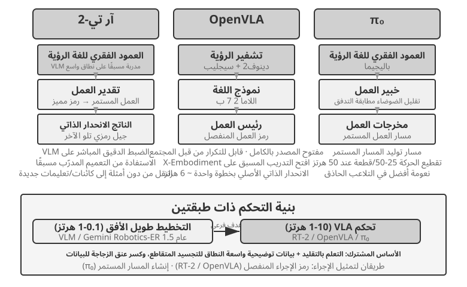
RT-2 وOpenVLA: مسار رمز الإجراء المنفصل.
كان RT-2 رائدًا في هذا الطريق: فهو يضبط بشكل مباشر نموذج لغة الرؤية واسع النطاق، ويفصل تصرفات الروبوت المستمرة إلى رموز مميزة ويخرجها بشكل انحداري واحدًا تلو الآخر، مثل إنشاء نص. إنه يعزز قدرة التعميم للنموذج المُدرب مسبقًا لتحسين النقل من دون أمثلة إلى كائنات وتعليمات جديدة. OpenVLA يتبع مخطط تمثيل الإجراء الخاص بـ RT-2، مما يوحد نموذج اللغة ومشفر الرؤية في بنية واحدة. يأخذ الصور والتعليمات النصية كرموز عمل للإدخال والمخرجات. يتم التدريب على مرحلتين: أولاً، التدريب المسبق على مجموعة البيانات واسعة النطاق عبر الأنظمة الأساسية Open X-Embodiment (التي تغطي عروض التلاعب في العالم الحقيقي من أكثر من 20 منصة روبوت) لتعلم المعرفة العامة بالتلاعب (أنماط الحركة مثل "الفهم" و"المكان" شائعة عبر الروبوتات المختلفة)؛ ثانيًا، الضبط الدقيق باستخدام كمية صغيرة من البيانات لمنصة معينة. ولأن تمثيلات أفعالهم متشابهة، فإن الاختلاف العملي الذي تم التأكيد عليه هنا يكمن في الانفتاح والاختيارات الهندسية: يعد RT-2 وبياناته التدريبية داخلية بالنسبة إلى Google، في حين أن OpenVLA مفتوح المصدر بالكامل - وهو نموذج أساسي مفتوح المصدر (Llama 2 بالإضافة إلى أداة تشفير الرؤية) مقترنًا بمجموعات البيانات العامة، مما يجعل حزمة OpenVLA قابلة للتكرار والتوسيع من قبل المجتمع الأوسع.
تقطيع الإجراء: تقنية عالمية لتعويض التردد في مجال VLA.
نظرًا لأن الاستدلال في النماذج الكبيرة بطيء، فإن VLAs تعمل على الاستدلال بترددات أقل بكثير من تلك التي تعمل بها وحدات التحكم الروبوتية التقليدية. يعمل التحكم التقليدي عادةً عند تردد يتراوح بين 50 إلى 1000 هرتز، في حين يعمل استدلال VLA عادةً عند حوالي 1 إلى 10 هرتز فقط - وهي فجوة يمكن أن تتراوح من واحد إلى ثلاثة أوامر من حيث الحجم. يوضح OpenVLA الأصلي هذه المشكلة: فهو يُخرج إجراءً واحدًا فقط لكل استدلال، بمعدل 6 هرتز تقريبًا باستخدام تنبؤ الانحدار الذاتي أحادي الخطوة، كما أن حركته المتشنجة هي واحدة من أكثر عيوبه تعرضًا للانتقاد. تقطيع الإجراء هو أسلوب عام لسد هذه الفجوة. تم اقتراحه لأول مرة بواسطة ACT (Zhao et al., 2023) ثم تم اعتماده لاحقًا بواسطة π₀ وOpenVLA-OFT وآخرين، حيث يقوم النموذج بإنشاء تسلسل قصير من الإجراءات المستقبلية في كل استنتاج بدلاً من إجراء واحد. في التكوين النموذجي π₀، على سبيل المثال، يقوم النموذج بإنشاء مقطع مدته 0.5-1 ثانية يحتوي على 25-50 إجراء بتردد تحكم 50 هرتز. يقوم خيط التحكم بتنفيذ هذه الإجراءات بشكل تسلسلي بتردد عالٍ بينما يقوم النموذج بإنشاء الدفعة التالية بشكل غير متزامن في الخلفية. وطالما أن الاستدلال ينتهي قبل انتهاء تنفيذ مجموعة الإجراء الحالية، يمكن للروبوت الحفاظ على حركة مستمرة وسلسة - مثلما يمنع التخزين المؤقت للفيديو التشغيل من التأتأة عن طريق تحميل المحتوى مسبقًا.
π₀: مسار إنشاء المسار المستمر.
الانقسام الحقيقي في تمثيل الإجراء ليس بين RT-2 وOpenVLA، ولكن بين الرموز المنفصلة وتوليد المسار المستمر. π₀ يتبع المسار الأخير: بدلاً من التنبؤ برموز العمل المنفصلة واحدة تلو الأخرى، فإنه يستخدم مطابقة التدفق، وهي طريقة توليد مستمرة تتعلق بنماذج الانتشار، للبدء بالضوضاء العشوائية و"تقليل الضوضاء" بشكل متكرر إلى مسار عمل سلس ومستمر. يقترن هذا التمثيل بشكل طبيعي مع تقطيع الحركة ويؤدي بشكل أفضل في مهام مثل التلاعب الحاذق الذي يتطلب حركة سلسة ودقيقة. على سبيل القياس، يشبه أسلوب الرمز المنفصل اختيار أوامر مثل "5 درجات لليسار" و"3 سم للأمام" واحدًا تلو الآخر من القائمة. إن توليد المسار المستمر يشبه إلى حد كبير فنانًا يرسم المنحنى بأكمله ثم يقوم بتحسينه خطوة تلو الأخرى.
نقل Sim2Real: الفجوة من المحاكاة إلى الواقع¶
لقد أوضح قسم المحاكاة في الفصل السادس بالفعل من أين تأتي فجوة المحاكاة إلى الحقيقية وكيف تتصدى لها التوزيع العشوائي للنطاق، لذلك لن نكرر ذلك هنا. باختصار: لا يمكن للمحاكاة أبدًا إعادة إنتاج فيزياء العالم الحقيقي، والمرئيات، والأجهزة بشكل مثالي، لذا فإن التدريب يقوم بترتيب هذه المعلمات بشكل عشوائي على نطاق واسع، مما يجبر السياسة على تعلم تمثيل قوي لتلك الاختلافات (الشكل 9-12). ما يلي هو كيف يستقر هذا المبدأ على ذراع آلية حقيقية.
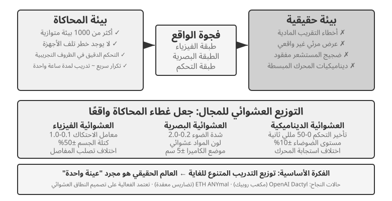
وقد حقق هذا النهج العديد من النجاحات الملحوظة. حقق مشروع Dactyl الخاص بـ OpenAI إعادة توجيه المكعب باليد، واستخدم العمل اللاحق التوزيع العشوائي للمجال التلقائي (ADR) لحل مكعب روبيك بيد واحدة. أظهر ANYmal رباعي الأرجل من ETH Zurich حركة قوية على التضاريس الخارجية الصعبة مثل الثلج والحصى.
ما يضيفه هذا الفصل هما الخطوتان الهندسيتان اللتان لا يمكنك تخطيهما عند نقل التوزيع العشوائي للمجال إلى روبوت حقيقي. الأول هو معايرة نطاق التوزيع العشوائي: لا يمكن ضبط النطاق بناءً على حدس. ضيقة جدًا، وتفتقد التنوع في العالم الحقيقي؛ على نطاق أوسع مما ينبغي، ويصبح التدريب أكثر صعوبة وينتج سياسة دون المستوى الأمثل "تتعامل مع كل شيء، ولا تتقن أي شيء". من الناحية العملية، يتم أولاً قياس توزيع المعلمات الرئيسية (معامل الاحتكاك، وتأخير استجابة المحرك) ومعايرتها من بيانات واقعية وأخذ عينات منها ضمن هذا النطاق؛ إذا انخفض أداء سياسة المحاكاة المدربة بشكل ملحوظ على الروبوت الحقيقي، فسيتم توسيع النطاق خطوة بخطوة حتى تتقارب فجوة المحاكاة إلى الواقع إلى شيء مقبول. والثاني هو المحاذاة المرئية: معايرة وضعية الكاميرا بدقة بين المحاكاة والواقع (محاذاة البيئة)، وربط صور خلفية العالم الحقيقي بشكل عشوائي في العرض المحاكى (استبدال خلفية الشاشة الخضراء) بحيث تبدو المحاكاة قدر الإمكان مثل ما يراه الروبوت الحقيقي. توضح التجربة 9-10 كلتا الخطوتين.
التجربة 9-10 ★★★: الإمساك الروبوتي Zero-Shot RGB Sim2Real
باستخدام جهاز محاكاة LeRobot + ManiSkill، تدرب باستخدام صور كاميرا RGB فقط (دون الاعتماد على مستشعرات العمق أو مستشعرات القوة)، ثم قم بنشر التعلم من دون أمثلة (دون أي ضبط إضافي) مباشرةً على ذراع روبوتية SO100 حقيقية. تتكون العملية من خمس خطوات:
- محاذاة البيئة: اضبط مواضع الكاميرا في المحاكاة والبيئة الحقيقية، وتحقق من خلال التراكب المرئي أن الصور من كلا الجانبين تتم محاذاتها.
- استبدال الخلفية (شاشة خضراء): يمكنك قص صور الخلفية التي تم التقاطها من البيئة الحقيقية بشكل عشوائي وتراكبها على عرض المحاكاة، مما يجعل خلفية المحاكاة أقرب إلى الواقع.
- التوزيع العشوائي للمجال: قم بتعيين المعلمات بطريقة عشوائية مثل لون الروبوت وملمس الكائن وظروف الإضاءة ومجال رؤية الكاميرا.
- تدريب RL: تدرب على استخدام خوارزمية PPO في بيئة محاكاة متوازية بشكل كبير حتى يتجاوز معدل النجاح في المحاكاة 90%.
- النشر في العالم الحقيقي: أكمل مهمة الإمساك بالروبوت الحقيقي بنجاح.
عوامل النجاح الرئيسية: المحاذاة الدقيقة للبيئة، والعشوائية للمجال البصري، والعشوائية للمعلمات المادية؛ الثلاثة لا غنى عنها. القيد: عندما يقع شكل أو حجم أو مادة الأشياء الحقيقية خارج نطاق توزيع التدريب، ينخفض معدل النجاح بشكل ملحوظ.11
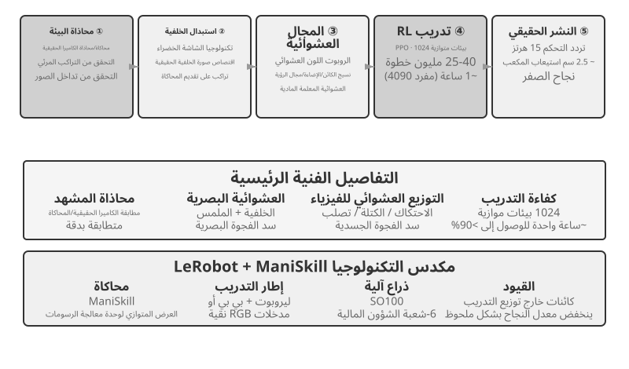
ملخص الفصل¶
قد تبدو السيناريوهات الثلاثة متباعدة جدًا، لكن عقبتَي زمن الاستجابة وتعدد الوسائط تخيّمان عليها جميعًا. فقد تطور الوكلاء الصوتيون من خطوط معالجة تسلسلية إلى أنظمة شاملة مزدوجة الاتجاه، ومن فصل التفكير السريع عن البطيء إلى التفكير أثناء الكلام. ويقترب استخدام الحاسوب اليوم من الدقة البشرية في معايير مثل OSWorld، لكنه يحتاج إلى خطوات أكثر بكثير مما يحتاج إليه الإنسان، كما تطول مدة كل خطوة مع تقدم المهمة؛ وهي فجوة في الكفاءة لم يظهر لها حل منهجي بعد. أما في الروبوتات التي تنفذ مهام معالجة موجّهة بصريًا، فقد انتقل عنق الزجاجة من العتاد إلى قدرة طبقة التحكم VLA على التعميم عبر المهام، وإن ظل الاستشعار اللمسي والأيدي الماهرة من قيود العتاد غير المحسومة. وينتقل الفصل التالي إلى التعاون بين عدة وكلاء، وهو تحدٍّ من بُعد مختلف.
أسئلة للتأمل¶
- ★★ يدمج النموذج الشامل لوكلاء الصوت ASR-LLM-TTS في نموذج واحد، مما يقلل زمن الوصول ولكنه يفقد النمطية. إذا حدث خطأ في النموذج الشامل في مرحلة معينة (على سبيل المثال، التعرف على الكلام)، فإن تصحيح الأخطاء وإصلاحها يكون أصعب بكثير من خط أنابيب تسلسلي. كيف يمكنك تصميم نظام مراقبة لوكيل صوتي شامل؟
- ★ يحقق Step-Audio R1 "التفكير أثناء التحدث" من خلال بنية MPS ثنائية الدماغ. ومع ذلك، فإن البشر، عندما "يفكرون أثناء التحدث"، غالبًا ما يقولون أشياء قبل أن يفكروا فيها بشكل كامل، أو يصححون أنفسهم، أو يستخدمون كلمات حشو. هل يجب على "تفكير الوكيل أثناء التحدث" أن يحاكي هذه الخصائص البشرية؟
- ★★ تعمل SoM (مجموعة العلامات) ومتغيراتها المنظمة (فهرسة عناصر DOM) على تحويل تحديد الموقع البصري لاستخدام الكمبيوتر من توقع الإحداثيات المفتوحة إلى تحديد معرف المجموعة المغلقة، ولكنها جميعًا تتطلب اكتشاف عناصر واجهة المستخدم والتعليق عليها أولاً - سواء عبر نموذج التجزئة أو DOM. إذا كانت الواجهة تحتوي على عناصر تحكم غير قياسية أو عناصر متغيرة ديناميكيًا، فقد تكون التعليقات التوضيحية غير كاملة أو غير دقيقة. في مثل هذه الحالات، هل يجب أن نعود إلى تنسيق التنبؤ؟
- ★★ منصات الروبوت التي تبلغ قيمتها ألف دولار مثل XleRobot تجعل جمع بيانات التشغيل عن بعد غير مكلف. ومع ذلك، فإن جودة بيانات التشغيل عن بعد تعتمد بشكل كبير على مهارة المشغل. كيف ستؤثر البيانات منخفضة الجودة الواردة من مشغل غير ماهر على تدريب نموذج VLA؟ كيف يمكن تصفية البيانات منخفضة الجودة تلقائيًا أثناء مرحلة جمع البيانات؟
- ★★★ يغطي هذا الفصل ثلاث طرق للتفاعل: الصوت، واستخدام الكمبيوتر، والروبوتات. الاتجاه الشائع عبر هذه الطرائق هو التطور من خطوط الأنابيب التسلسلية إلى النماذج الشاملة. إذا استمر هذا الاتجاه، كيف يمكن أن تبدو طبقة تفاعل الوكيل بعد خمس سنوات؟
- ★★★ يعمل استخدام الكمبيوتر الحالي في حلقة منفصلة "لقطة شاشة → إجراء → لقطة شاشة"، حيث تكون كل ملاحظة عبارة عن إطار ثابت. لكن الإدراك البشري للشاشة مستمر، فنحن نرى الرسوم المتحركة قيد التشغيل، ونلاحظ تقدم التحميل، ونفهم محتوى الفيديو. وهذا يعني أن استخدام الكمبيوتر اليوم لا يمكنه التعامل مع المهام التي تتطلب فهمًا بصريًا مؤقتًا. كيف يمكنك إعادة تصميم طبقة الإدراك لدعم فهم التدفقات المرئية المستمرة؟
- ★★ تعمل فهرسة عناصر DOM/Accessibility Tree بشكل جيد على تطبيقات الويب القياسية، ولكن عددًا متزايدًا من واجهات البرامج (عرض Canvas/WebGL، وعناصر التحكم المرسومة حسب الطلب عبر الأنظمة الأساسية) لا توفر معلومات منظمة يمكن الوصول إليها، وتعتمد فقط على التعليقات التوضيحية المرئية أو توقع الإحداثيات. هل تعتقد أن استخدام الكمبيوتر يجب أن يراهن على نهج مرئي بحت، أو يحافظ على المسارات المنظمة والمرئية؟ ما هي تكاليف وفوائد الحفاظ على كلا المسارين؟
- ★★ تستخدم نماذج VLA تقسيم الإجراء - كما هو مذكور في النص، فإن التكوين النموذجي لـ π₀ يولد 25-50 إجراءً مستقبليًا عند 50 هرتز - لإخفاء زمن الوصول للاستدلال خلال وقت التنفيذ. ومع ذلك، إذا تغيرت البيئة فجأة أثناء التنفيذ (على سبيل المثال، تم نقل كائن)، يصبح تسلسل الإجراء الذي تم إنشاؤه مسبقًا غير صالح. كيف يمكننا الموازنة بين ميزة الكفاءة في تقسيم العمل والحاجة إلى الاستجابة للتغيرات البيئية؟
- ★★★ تواجه جميع السيناريوهات الثلاثة في هذا الفصل (الصوت، واستخدام الكمبيوتر، والروبوتات) مشكلة زمن الوصول لحلقة "الإدراك والتفكير والفعل" وتتطور نحو التفكير السريع والبطيء المتوازي. ويتجلى ذلك في الصوت على أنه "التصحيح بعد الخطأ في الكلام". في استخدام الكمبيوتر، مثل "النقر أولاً، ثم البحث"؛ في علم الروبوتات، مثل "الخطوة ثم النظر". كيف يمكننا التأكد من أن هذه الإجراءات المبنية على التفكير السريع لا تؤدي إلى عواقب لا رجعة فيها؟
-
OpenAI. نقدم لكم GPT-Live. 08-07-2026. https://openai.com/index/introducing-gpt-live/. التصنيف المكون من ثلاثة أجزاء لـ "Cascaded / Turn-based / Full-Duplex" في هذا القسم نشأ من ملخص هذه المقالة للأجيال الثلاثة لتطور ChatGPT Voice؛ يتوافق "Omnimodal (Omni) من طرف إلى طرف" في النص مع فئة "نماذج الصوت القائمة على الأدوار". ↩
-
إن تشخيص التضمين يحول الحكم إلى أداة التعرف ويمكن العثور على مشكلة التسميات المستندة إلى الإدراك المتأخر في Bojie Li وNoah Shi. كانت المقايضة في التسميات: الإشراف السببي للتدفق الواعي ASR. 2026 (قادم). ↩
-
للحصول على قياس كامل عبر الوسائط لمتى تكون مزايا الدقة للتتالي والعكس من طرف إلى طرف، وكيفية التنبؤ بالاتجاه بناءً على طبيعة المهمة (ما إذا كان التمثيل الوسيط يمكنه حمل المعلومات المتعلقة بالمهمة بشكل كافٍ)، راجع Bojie Li وNoah Shi. الفجوة المتتالية: متى ولماذا تساعد التتاليات الذاتية وكلاء الوسائط المتعددة. 2026 (قريبًا). ↩
-
مختبر آلات التفكير، "نماذج التفاعل: نهج قابل للتطوير للتعاون بين الإنسان والذكاء الاصطناعي"، 2026-05. https://thinkingmachines.ai/blog/interaction-models/ ↩
-
يمكن العثور على التحليل الكامل للتدريب فقط على جسر الفضاء الكامن بين نموذجين متجمدين و"متى يستحق دعوة خبير استراتيجي بطيء" في Bojie Li وNoah Shi. الجسر الكامن: قناة مستمرة وبطيئة وسريعة لوكلاء الألعاب في الوقت الفعلي. أرخايف:2606.24470، 2026. ↩↩
-
للحصول على الآلية الكاملة والاستئصال لكل نموذج للمكونات الثلاثة - الإطارات الرئيسية المسورة، والنسخ حسب الطلب، وإطارات السرد إلى نص ثابت - راجع Bojie Li وNoah Shi. واجهات مراقبة الوكيل والكمبيوتر تتيح الاستخدام الديناميكي للكمبيوتر. arXiv:2606.29472, 2026. ↩
-
يمكن العثور على التصميم الكامل للفصل السريع والبطيء لعملية الكلام و"عقد النص العادي" في Bojie Li وNoah Shi. التحدث أثناء التمثيل: الصوت في الوقت الحقيقي لوكلاء استخدام الكمبيوتر البطيئين. 2026 (قريبًا). ↩
-
XLeRobot، "وثائق التحكم عن بعد". https://xlerobot.readthedocs.io/en/latest/software/getting_started/XLeRobot_teleop.html ↩
-
جوجل ديب مايند، "Gemini Robotics-ER 1.5." https://deepmind.google/models/gemini-robotics/gemini-robotics-er/ ↩
-
XLeRobot، "التحكم في الوكيل LLM". https://xlerobot.readthedocs.io/en/latest/software/getting_started/LLM_agent.html ↩
-
LeRobot، "برنامج Sim2Real التعليمي". https://github.com/StoneT2000/lerobot-sim2real/blob/main/docs/zero_shot_rgb_sim2real.md ↩